The trip in brief
Six weeks across Vietnam, south to north, starting in Saigon and slowly making our way up. This is a running journal — added to as the trip unfolds.
Le voyage en bref
Six semaines à travers le Vietnam, du sud au nord, en commençant par Saigon et en remontant tranquillement. Un journal qui se remplit au fil des étapes.
Călătoria pe scurt
Șase săptămâni prin Vietnam, de la sud la nord, pornind din Saigon și urcând încet. Acesta este un jurnal de bord — completat pe măsură ce etapele se succedă.
Saigon (Ho Chi Minh City) — first four days Saigon (Hô Chi Minh-Ville) — les quatre premiers jours Saigon (Ho Chi Minh City) — primele patru zile
Arrival in Saigon Arrivée à Saigon Sosire în Saigon
We landed in Saigon on 5 May 2026. A quick Grab ride took us to our hotel, Tra My Saigon — really cheap, but not particularly clean, and the floor of our room was completely warped by humidity. We stayed three nights, which felt like the right amount of time to discover the city without dragging it out. Saigon is alive and loud — not necessarily the kind of place you go to unwind on holiday, but exactly what you want for a first contact with the country.
For our first dinner we tested Phở Hòa Pasteur: a solid introduction to pho. We spent the rest of the evening wandering on foot, soaking up the Saigon nightlife.
Nous sommes arrivés à Saigon le 5 mai 2026. Après un petit Grab rapide, direction notre hôtel, Tra My Saigon — vraiment peu cher, mais pas extrêmement propre, et le plancher de notre chambre était complètement détruit par l'humidité. Nous y sommes restés trois nuits, le temps de découvrir la ville sans trop s'attarder. Saigon est très vivante et bruyante — pas nécessairement le cadre qu'on cherche en vacances, mais parfait pour un premier contact avec le pays.
Pour notre premier dîner, nous avons testé le Phở Hòa Pasteur : une bonne introduction au pho. Nous avons passé le reste de la soirée à marcher et nous émerveiller au gré de la vie nocturne saïgonaise.
Am aterizat în Saigon pe 5 mai 2026. Un Grab rapid ne-a dus la hotel, Tra My Saigon — foarte ieftin, dar nu prea curat, iar podeaua camerei era complet deformată de umezeală. Am stat trei nopți, suficient ca să descoperim orașul fără să exagerăm. Saigon e viu și zgomotos — nu neapărat locul unde te duci să te relaxezi, dar exact ce îți trebuie pentru un prim contact cu țara.
La primul nostru dineu am testat Phở Hòa Pasteur — o introducere solidă în lumea pho-ului. Restul serii l-am petrecut plimbându-ne și absorbind viața nocturnă din Saigon.

Tao Đàn Park & the Reunification Palace Parc Tao Đàn & Palais de la Réunification Parcul Tao Đàn & Palatul Reunificării
Daytime visit to the Tháp Chăm at Tao Đàn park, followed by our first proper banh mi at Bánh Mì Huỳnh Hoa — Lê Thị Riêng. After lunch, the Reunification (Independence) Palace and its gardens. The side pavilion holds most of the historical context with detailed maps explaining the modern history of Vietnam well — though there's a lot to absorb. The palace itself is more of an architectural visit: imagine the place in use (rooftop helicopter, bunker, reception hall, gardens, interiors). It's not air-conditioned — anyone who suffers in the heat should plan around the cooler hours.
For dinner we ended up in what turned out to be our first "bad experience": a restaurant highly recommended on Google, but in practice far too touristy, well above Saigon prices, and visibly split between a foreigner room and a local room.
Visite de jour du Tháp Chăm dans le parc Tao Đàn, puis dégustation de notre premier vrai banh mi chez Bánh Mì Huỳnh Hoa — Lê Thị Riêng. L'après-midi, le Palais de la Réunification (Independence Palace) et ses jardins. Le pavillon attenant concentre la majorité du contexte historique avec de grandes cartes qui détaillent bien l'histoire moderne du Vietnam, mais cela reste assez compliqué à assimiler compte tenu de la densité du récit. Le palais en lui-même est plutôt une visite d'architecture, pour imaginer la vie pendant son utilisation (hélicoptère sur le toit, bunker, belle salle de réception, beaux jardins, intérieurs). Le palais n'étant pas climatisé, il est préférable, pour les personnes qui souffrent de la chaleur, de le visiter quand il ne fait pas trop chaud.
Pour le dîner, nous avons essuyé notre première « mauvaise expérience » : un restaurant pourtant bien recommandé sur Google nous est apparu beaucoup trop touristique, trop onéreux par rapport à la norme saïgonaise, et visiblement divisé en deux salles — une pour les étrangers, une pour les locaux.
Vizită de zi la Tháp Chăm din parcul Tao Đàn, urmat de primul nostru banh mi adevărat la Bánh Mì Huỳnh Hoa — Lê Thị Riêng. După-amiaza, Palatul Reunificării și grădinile sale. Pavilionul lateral conține cea mai mare parte a contextului istoric, cu hărți detaliate care explică bine istoria modernă a Vietnamului — deși e multă informație de digerat. Palatul în sine e mai degrabă o vizită arhitecturală: imaginezi-ți locul în uz (elicopterul de pe acoperiș, buncărul, sala de recepții, grădinile). Nu e climatizat — cei care suferă de căldură ar trebui să planifice vizita la ore mai răcoroase.
La cină am dat de prima noastră „experiență proastă": un restaurant recomandat pe Google, dar prea turistic, mult peste prețurile din Saigon, și vizibil împărțit în două săli — una pentru străini, una pentru localnici.
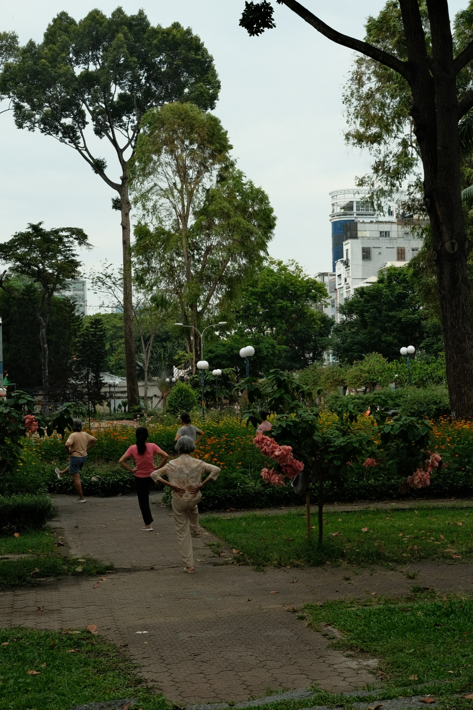


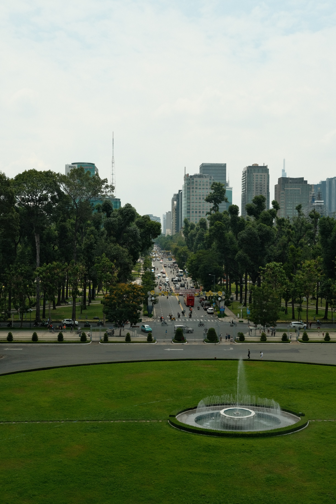


Old centre, Cholon & Bui Vien Centre historique, Cholon & Bui Vien Centrul vechi, Cholon & Bui Vien
We walked from the hotel down to Saigon's historic centre. Coffee stop at Tonkin Specialty Coffee — touristy but excellent. We tried an egg coffee and a ginger coffee. The café is tucked away on the second floor, at the end of a long corridor.
Lunch two minutes away at Bún riêu Gánh: authentic, slightly pricey, with a wonderfully savoury pork-and-shrimp pho. First experience with Mắm tôm, a fermented shrimp paste — very strong, very particular flavour.
In the afternoon we visited a station of the brand-new Metro Line 1: the station was deserted, ridership clearly hasn't taken off yet. In a desperate quest for sticky rice we landed at Xoài-Mango Local Dishes, then took a Grab to Cholon, Saigon's Chinatown. Dessert at Xôi Lá Chuối phường An Đông, then Cristina got her nails done at Lisa Nail & Spa — Tiệm Nail Quận 5.
Back to the hotel, then out again that evening to walk Bùi Viện Walking Street — Saigon's nightlife strip: bars with dancers, very loud DJ sets. Not exactly a family outing.
Nous avons continué à pied depuis l'hôtel jusqu'au centre historique de Saigon. Pause café chez Tonkin Specialty Coffee, touristique mais excellente adresse. Nous avons dégusté un egg coffee et un café au gingembre. Le café est caché au deuxième étage, au bout d'un long couloir.
Déjeuner à deux pas de là au Bún riêu Gánh : authentique, un peu onéreux, un pho porc et crevette très savoureux. Première expérience avec le Mắm tôm, une pâte de crevettes fermentée au goût très fort et particulier.
L'après-midi, visite d'une station de la toute nouvelle ligne 1 du métro, qui semblait avoir très peu de succès : la station était complètement déserte. Dans une quête désespérée de riz gluant, nous avons jeté notre dévolu sur Xoài-Mango Local Dishes, puis pris un Grab pour Cholon, le quartier chinois de Saigon. Dessert chez Xôi Lá Chuối phường An Đông, et Cristina s'est fait faire les ongles chez Lisa Nail & Spa — Tiệm Nail Quận 5.
Retour à l'hôtel, puis ressortie en soirée pour visiter la Bùi Viện Walking Street, la rue qui regroupe la nightlife de Saigon : bars avec danseuses, sets de DJ très bruyants. Pas nécessairement à visiter en famille.
Am mers pe jos de la hotel spre centrul istoric al Saigonului. Pauză de cafea la Tonkin Specialty Coffee — turistic dar excelent. Am încercat un egg coffee și un cafea cu ghimbir. Localul e ascuns la etajul doi, la capătul unui lung coridor.
Prânz la doi pași, la Bún riêu Gánh: autentic, ușor scump, cu un pho de porc și creveți foarte savuros. Prima experiență cu Mắm tôm, o pastă de creveți fermentați — aromă foarte intensă și aparte.
După-amiaza am vizitat o stație de pe noua linie de metrou 1: era complet pustie, lumea n-a adoptat-o încă. Într-o căutare disperată de orez glutinos am ajuns la Xoài-Mango Local Dishes, apoi Grab spre Cholon, Chinatown-ul Saigonului. Desert la Xôi Lá Chuối phường An Đông, și Cristina și-a făcut unghiile la Lisa Nail & Spa — Tiệm Nail Quận 5.
Înapoi la hotel, apoi ieșire serală pe Bùi Viện Walking Street — strada de viață nocturnă a Saigonului: baruri cu dansatoare, seturi de DJ foarte zgomotoase. Nu tocmai o ieșire în familie.


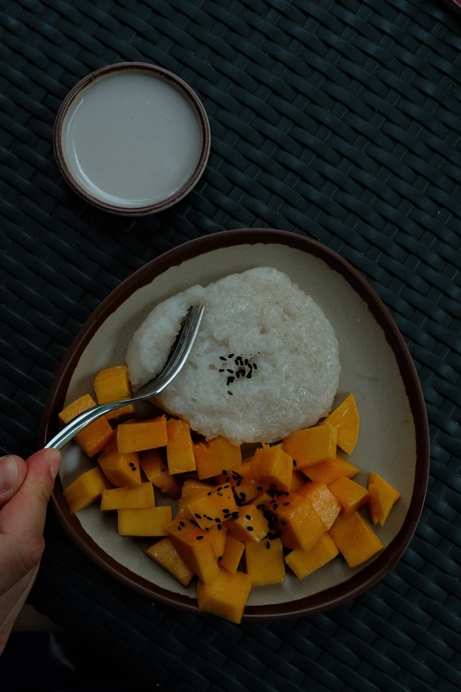

War Remnants Museum & the night bus to Dalat Musée des Vestiges de la Guerre & bus de nuit pour Dalat Muzeul Vestigiilor de Război & autobuzul de noapte spre Dalat
Last day in Saigon. Our bus to Dalat left at 23:30 so we left our bags at the hotel for the day — most decent Saigon hotels are happy to do this for free. Lunch at Phở Hương Bình, surrounded by drivers on their break.
Then the War Remnants Museum: another window onto modern Vietnamese history, mostly focused on the American war with a smaller section on the French colonial legacy, plus extensive photography halls.
We then drifted toward the modern centre to take refuge inside the malls during the midday heat peak (noon–2pm). A stop at Guta, a local Vietnamese chain, then the Vincom Center boutiques, the Bến Thành Market, and Saigon Square. Both markets offer counterfeits at prices that look interesting to a Western eye but remain inflated compared to actual production cost or to what you can find elsewhere in Vietnam. Saigon Square is noticeably calmer and some of the shops carry better quality.
In the evening we picked up our bus for Dalat — a quick wait at another local coffee chain, Katinat.
Dernier jour à Saigon. Notre bus pour Dalat partait à 23h30, donc nous avons laissé nos affaires à l'hôtel pour la journée — la plupart des hôtels convenables à Saigon acceptent volontiers et gratuitement. Déjeuner au Phở Hương Bình, entourés de chauffeurs en pause.
Puis visite du Musée des Vestiges de la Guerre, qui revient également sur l'histoire moderne du Vietnam, principalement axé sur la période avec les Américains, avec un petit morceau sur les vestiges coloniaux français et de nombreuses sections photographiques.
Nous nous sommes ensuite dirigés vers le centre moderne pour nous isoler dans les malls et profiter de la climatisation au pic de chaleur (entre midi et 14h). Pause boissons chez Guta, chaîne vietnamienne, puis visite des boutiques du Vincom Center, du Marché Bến Thành et de Saigon Square. Les deux marchés présentent des tarifs intéressants pour les Occidentaux mais proposent des contrefaçons de qualité variable à des prix tout de même exagérés au regard du coût de fabrication ou de ce qu'on trouve ailleurs au Vietnam. On recommande tout de même le deuxième, beaucoup plus calme et avec des boutiques plus qualitatives.
En soirée, nous sommes allés récupérer notre bus pour Dalat — petite attente dans un Katinat, autre chaîne de café vietnamienne.
Ultima zi în Saigon. Autobuzul spre Dalat pleca la 23:30, deci am lăsat bagajele la hotel pentru toată ziua — majoritatea hotelurilor decente din Saigon acceptă asta fără plată suplimentară. Prânz la Phở Hương Bình, înconjurați de șoferi în pauza de masă.
Apoi Muzeul Vestigiilor de Război — o altă fereastră spre istoria modernă vietnameză, centrat pe războiul cu americanii, cu o secțiune mai mică despre moștenirea colonială franceză și numeroase galerii fotografice.
Ne-am îndreptat apoi spre centrul modern ca să ne refugiem în mall-uri de vârful de căldură (12–14). Pauză de băuturi la Guta, lanț vietnamez, apoi Vincom Center, Piața Bến Thành și Saigon Square. Ambele piețe vând falsuri la prețuri care par atractive pentru un european, dar rămân umflate față de costul real de producție sau față de ce găsești în altă parte în Vietnam. Saigon Square e mai liniștit și câteva magazine au calitate mai bună.
Seara am mers să ne luăm autobuzul spre Dalat — o scurtă așteptare la Katinat, alt lanț de cafele vietnamez.
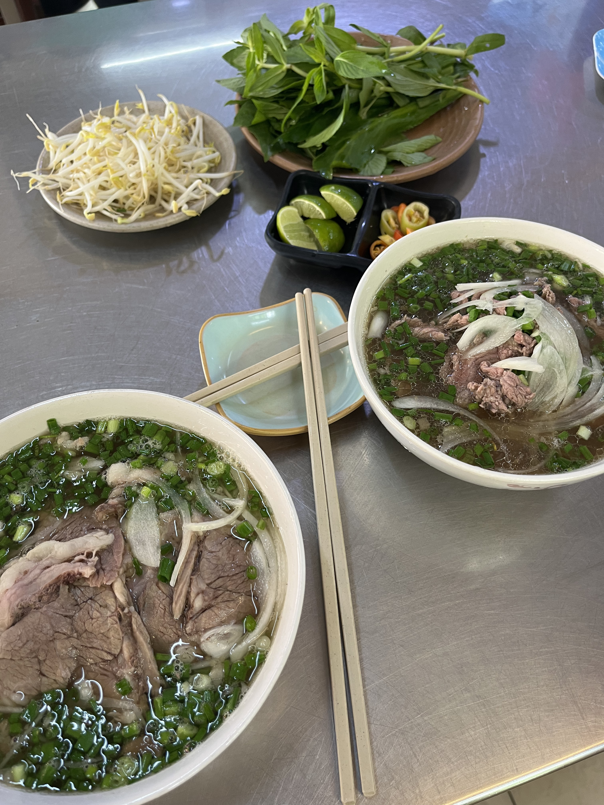

Dalat — highlands and cool air Dalat — hauts plateaux et fraîcheur Dalat — podișul și aerul răcoros
Overnight bus arrival — first steps in Dalat Arrivée après le bus de nuit — premiers pas à Dalat Sosire cu autobuzul de noapte — primii pași în Dalat
The night bus from Saigon deposited us in Dalat around 6am — no sleep to speak of. The hotel room wasn't ready until 13:00, so we dumped our bags and set off immediately. The altitude is immediately noticeable: cooler, less suffocating than Saigon, with an almost European feel to the air.
We walked around the Hồ Xuân Hương lake — the central lake that gives Dalat its character — then caught a film at CineStar Đà Lạt to escape the mid-morning fog and recover from the bus. A nap on the grass of Yersin park once the sun came out, then an excellent lunch at Mì Quảng Hội An (a bowl of Hội An-style noodles — flat rice noodles with broth, shrimp, pork, peanuts and sesame crackers).
In the evening: pastries at Lien Hoa Bakery, Dalat's iconic French-influenced bakery; then Bánh Tráng Nướng Hiền for street pizza (grilled rice paper with egg, spring onion, dried shrimp and chilli — an addictive Dalat staple); avocado ice cream at Chạm Cafe. Rented a scooter for the next two days from Happy Scooter (150,000 VND / day — around €5.50).
Le bus de nuit depuis Saigon nous a déposés à Dalat vers 6h — sans vraiment avoir dormi. La chambre d'hôtel n'était pas prête avant 13h, alors nous avons posé les sacs et sommes repartis aussitôt. L'altitude se ressent immédiatement : plus frais, moins étouffant que Saigon, avec quelque chose de presque européen dans l'air.
Balade autour du lac Hồ Xuân Hương — le lac central qui donne son caractère à Dalat — puis séance de cinéma au CineStar Đà Lạt pour fuir le brouillard matinal et récupérer du bus. Une sieste sur l'herbe du parc Yersin une fois le soleil revenu, puis excellent déjeuner au Mì Quảng Hội An (un bol de nouilles façon Hội An — pâtes de riz larges avec bouillon, crevettes, porc, cacahuètes et galettes de sésame).
Le soir : pâtisseries chez Lien Hoa Bakery, la boulangerie iconique de Dalat à l'influence française ; puis Bánh Tráng Nướng Hiền pour la street pizza dalataise (galette de riz grillée avec œuf, oignon nouveau, crevettes séchées et piment — un incontournable addictif) ; glace à l'avocat au Chạm Cafe. Location d'un scooter pour les deux jours suivants chez Happy Scooter (150 000 VND / jour — environ 5,50 €).
Autobuzul de noapte din Saigon ne-a lăsat în Dalat pe la 6 dimineața — fără prea mult somn. Camera nu era gata până la 13:00, deci am lăsat bagajele și am plecat imediat. Altitudinea se simte instantaneu: mai răcoros, mai puțin sufocant decât Saigon, cu ceva aproape european în aer.
Plimbare în jurul lacului Hồ Xuân Hương — lacul central care dă caracterul orașului — apoi film la CineStar Đà Lạt ca să scăpăm de ceața dimineții și să ne recuperăm după autobuz. Un pui de somn pe iarba din parcul Yersin după ce a ieșit soarele, apoi un prânz excelent la Mì Quảng Hội An (un bol de tăiței în stil Hội An — tăiței lați de orez cu supă, creveți, porc, arahide și biscuiți de susan).
Seara: patiserie la Lien Hoa Bakery, brutăria iconică din Dalat cu influențe franceze; apoi Bánh Tráng Nướng Hiền pentru pizza stradală (foaie de orez la grătar cu ou, ceapă verde, creveți uscați și ardei iute — un clasic Dalat irezistibil); înghețată de avocado la Chạm Cafe. Am închiriat un scooter pentru următoarele două zile de la Happy Scooter (150.000 VND/zi — circa 5,50 €).
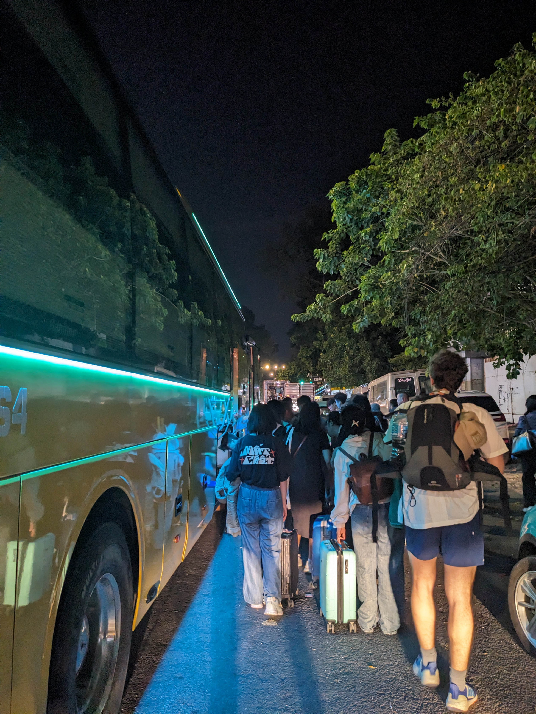
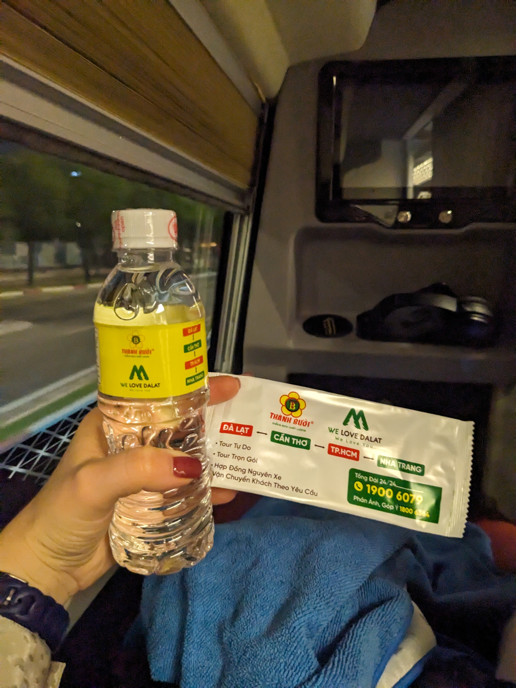


Monastery, forest café & pagodas by scooter Monastère, café forestier & pagodes en scooter Mănăstire, cafea în pădure & pagode pe scooter
First full scooter day. We rode out to Thiền Viện Trúc Lâm, a working Zen Buddhist monastery perched above the pine forest — calm, beautifully maintained, free to visit. From there we traced a mountain path through the trees to reach Tay mơ Amateurs, a forest café accessible only by scooter or on foot: long wooden tables, the sound of the wind in the pines, Vietnamese drip coffee at 20,000 VND. Worth every twist of the mountain path.
Back in town for our first bánh bèo at Bánh bèo Bà Hường — tiny steamed rice cakes topped with shrimp paste, spring onion oil and crispy pork skin. Then back on the scooter along the DT725 road to Linh Ẩn Pagoda, where a 151-metre female Buddha statue overlooks the valley — one of the tallest in Vietnam. A detour via Chùa Vạn Đức.
Evening: first nem nướng (grilled pork skewers wrapped in rice paper with fresh herbs) at Nem nướng Dũng Lộc, then a generous plate of grilled pork rice at Cơm tấm Cô Hai. Finished the day, as has become habit, with pastries at Lien Hoa Bakery.
Première vraie journée à scooter. Nous sommes allés jusqu'au Thiền Viện Trúc Lâm, un monastère bouddhiste Zen en activité perché au-dessus de la forêt de pins — calme, admirablement entretenu, gratuit. De là, nous avons suivi un chemin de montagne dans les arbres jusqu'au Tay mơ Amateurs, un café forestier uniquement accessible à scooter ou à pied : longues tables en bois, vent dans les pins, café vietnamien goutte-à-goutte à 20 000 VND. Ça vaut chaque virage du chemin de montagne.
Retour en ville pour nos premiers bánh bèo chez Bánh bèo Bà Hường — petits gâteaux de riz cuit à la vapeur garnis de pâte de crevettes, huile de ciboulette et couenne de porc croustillante. Puis de nouveau sur le scooter le long de la DT725 jusqu'à la Pagode Linh Ẩn, où une statue féminine de Bouddha de 151 mètres domine la vallée — l'une des plus hautes du Vietnam. Détour par Chùa Vạn Đức.
Soirée : premiers nem nướng (brochettes de porc grillé enroulées dans du papier de riz avec des herbes fraîches) chez Nem nướng Dũng Lộc, puis une généreuse assiette de riz au porc grillé chez Cơm tấm Cô Hai. Fin de journée, comme c'est devenu une habitude, avec des viennoiseries chez Lien Hoa Bakery.
Prima zi completă pe scooter. Am mers până la Thiền Viện Trúc Lâm, o mănăstire budistă Zen activă situată deasupra pădurii de pini — liniștită, bine întreținută, intrare gratuită. De acolo am urmat un drum de munte prin copaci până la Tay mơ Amateurs, o cafea de pădure accesibilă doar cu scooter-ul sau pe jos: mese lungi din lemn, vântul prin pini, cafea vietnameză la picătură la 20.000 VND. Merită fiecare curbă a drumului de munte.
Înapoi în oraș pentru primul nostru bánh bèo la Bánh bèo Bà Hường — mici prăjituri de orez aburite, cu pastă de creveți, ulei de ceapă verde și coajă crocantă de porc. Apoi din nou pe scooter pe drumul DT725 până la Pagoda Linh Ẩn, unde o statuie feminină de Buddha de 151 de metri domină valea — una dintre cele mai înalte din Vietnam. Ocol prin Chùa Vạn Đức.
Seara: primii nem nướng (frigărui de porc la grătar înfășurate în foaie de orez cu ierburi proaspete) la Nem nướng Dũng Lộc, apoi o farfurie generoasă de orez cu porc la grătar la Cơm tấm Cô Hai. Zi încheiată, ca de obicei, cu patiserie de la Lien Hoa Bakery.


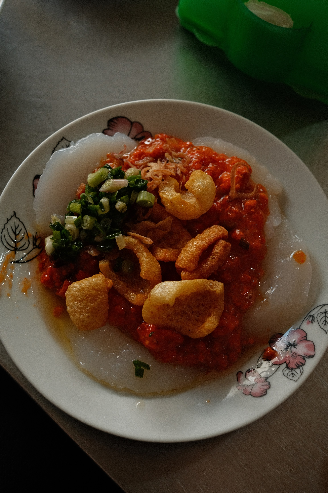


Langbiang Mountain & Linh Phước Pagoda Mont Langbiang & Pagode Linh Phước Muntele Langbiang & Pagoda Linh Phước
We picked up our bus tickets for Quy Nhon at the station first thing, then set off for Langbiang Mountain (2,167 m). The hike is roughly 5 km return; the final kilometre to the summit involves ropes on a steep, muddy slope. A bee stung me somewhere along the way — minor incident. The trail feels genuinely wild: wild horses grazing on the upper slopes, a salamander crossing the path, a small snake. We passed four other tourists total. You register at a checkpoint at the base before starting.
On the descent we noticed the greenhouse agriculture blanketing the hills around Dalat: entire hillsides under opaque white plastic sheeting, protecting strawberries, vegetables and flowers from monsoon rain and insects — produce grown to international export standards. A surreal landscape from above.
Last stop: Linh Phước Pagoda, completed in 1952 after three years of construction and decorated with a famous mosaic made from over 12,000 broken glass bottles. Striking. A Russian tour bus had arrived just before us — the contrast with the silence of Langbiang was stark.
Nous avons d'abord récupéré nos billets de bus pour Quy Nhon à la gare routière, puis direction le mont Langbiang (2 167 m). La randonnée fait environ 5 km aller-retour ; le dernier kilomètre vers le sommet nécessite des cordes sur une pente raide et boueuse. Une abeille m'a piqué quelque part en chemin — incident mineur. Le sentier a quelque chose de vraiment sauvage : des chevaux sauvages qui broutent sur les hauteurs, une salamandre qui traverse le chemin, un petit serpent. Nous avons croisé quatre autres touristes en tout. On s'enregistre à un poste de contrôle au bas avant de partir.
En redescendant, nous avons mieux observé l'agriculture sous serre qui recouvre les collines autour de Dalat : des pans entiers de colline sous des bâches en plastique blanc opaque, protégeant fraises, légumes et fleurs de la pluie de mousson et des insectes — des cultures aux normes internationales d'exportation. Paysage surréaliste vu d'en haut.
Dernière étape : la Pagode Linh Phước, achevée en 1952 après trois ans de construction et ornée d'une célèbre mosaïque de plus de 12 000 bouteilles de verre brisées. Frappant. Un bus touristique russe venait d'arriver juste avant nous — le contraste avec le silence du Langbiang était saisissant.
Am ridicat întâi biletele de autobuz spre Quy Nhon de la gară, apoi am pornit spre Muntele Langbiang (2.167 m). Traseul e de aproximativ 5 km dus-întors; ultimul kilometru spre vârf implică frânghii pe o pantă abruptă și noroioasă. O albină m-a înțepat undeva pe drum — incident minor. Poteca se simte cu adevărat sălbatică: cai sălbatici pășunând pe versanți, o salamandră care traversează cărarea, un șarpe mic. Am întâlnit în total patru turiști. La baza traseului există un punct de control unde te înregistrezi înainte să pornești.
La coborâre am observat mai bine agricultura la seră care acoperă dealurile din jurul Dalat-ului: versanți întregi sub folii albe opace de plastic, protejând căpșuni, legume și flori de ploile de muson și de insecte — produse cultivate la standarde internaționale de export. Un peisaj suprarealist văzut de sus.
Ultima oprire: Pagoda Linh Phước, finalizată în 1952 după trei ani de construcție și decorată cu o faimoasă mozaică din peste 12.000 de bucăți de sticle sparte. Impresionant. Un autocar turistic rusesc tocmai sosise înaintea noastră — contrastul cu liniștea de pe Langbiang era izbitor.


Quy Nhon — the coast nobody talks about Quy Nhon — le littoral dont personne ne parle Quy Nhon — coasta despre care nimeni nu vorbește
Sleeper bus to Quy Nhon Bus couchette pour Quy Nhon Autobuz culcat spre Quy Nhon
A 7am sleeper bus from Dalat — a much better experience than the first night bus. The beds are fully flat, the air conditioning bearable, and Vietnamese highways at dawn are surprisingly peaceful. We arrived at Diêu Trì, the nearest bus hub, and caught a shuttle into Quy Nhon centre.
Checked into Lux Quy Nhon Homestay (300,000 VND a night, roughly €9.80) — clean, simple, and a genuine bargain. Rented a scooter from a young guy near the homestay. Dinner that evening was our one clear disappointment of Quy Nhon: an overpriced seafood restaurant with mediocre food. An outlier — the city has much better to offer, as the next three days proved.
Bus couchette à 7h depuis Dalat — une expérience bien meilleure que le premier bus de nuit. Les couchettes sont complètement plates, la climatisation supportable, et les autoroutes vietnamiennes à l'aube sont étonnamment paisibles. Nous sommes arrivés à Diêu Trì, le hub de bus le plus proche, et avons pris une navette jusqu'au centre de Quy Nhon.
Check-in au Lux Quy Nhon Homestay (300 000 VND la nuit, environ 9,80 €) — propre, simple, et une vraie bonne affaire. Scooter loué à un jeune homme près du homestay. Le dîner ce soir-là fut notre seule déception claire à Quy Nhon : un restaurant de fruits de mer trop cher avec des plats médiocres. Un cas isolé — la ville a bien mieux à offrir, comme les trois jours suivants l'ont prouvé.
Autobuz culcat la 7 dimineața din Dalat — o experiență mult mai bună decât primul autobuz de noapte. Paturile sunt complet plate, aerul condiționat suportabil, iar autostrăzile vietnameze la răsărit sunt surprinzător de liniștite. Am ajuns la Diêu Trì, cel mai apropiat nod de autobuze, și am luat o navetă până în centrul orașului Quy Nhon.
Check-in la Lux Quy Nhon Homestay (300.000 VND pe noapte, circa 9,80 €) — curat, simplu și un adevărat chilipir. Am închiriat un scooter de la un tânăr lângă homestay. Cina din acea seară a fost singura dezamăgire clară din Quy Nhon: un restaurant de fructe de mare scump și mediocru. O excepție — orașul are mult mai mult de oferit, cum au dovedit-o următoarele trei zile.
Bãi Xếp fishing village & the best meal of the trip Village de pêcheurs de Bãi Xếp & le meilleur repas du voyage Satul de pescari Bãi Xếp & cel mai bun prânz al călătoriei
Banh mi for breakfast, then scooter south to Bãi Xếp, a small fishing village with a cove that still feels intimate and local despite a handful of resorts eating into its edges. The sea here is calm, the water transparent. We stayed most of the morning — and yes, got sunburned despite sunscreen; the reflected glare off the water is merciless.
Lunch at Cá Gỗ – Làng Chài Bãi Xếp: easily the best meal of the entire trip. An open kitchen right on the waterfront, incredibly fresh seafood cooked simply and perfectly, and they brought out a small dessert at the end unprompted. The kind of place you go back to the next day and wish you'd discovered on day one.
Banh mi au petit-déjeuner, puis scooter vers le sud jusqu'à Bãi Xếp, un petit village de pêcheurs avec une crique qui garde encore un caractère intime et local malgré quelques resorts qui grignotent ses bords. La mer y est calme, l'eau transparente. Nous y avons passé la plus grande partie de la matinée — et oui, nous avons pris des coups de soleil malgré la crème solaire ; la réverbération de l'eau est impitoyable.
Déjeuner chez Cá Gỗ – Làng Chài Bãi Xếp : sans conteste le meilleur repas du voyage. Cuisine ouverte face à la mer, fruits de mer d'une fraîcheur incroyable, cuisinés simplement et parfaitement, et on nous a apporté un petit dessert à la fin sans qu'on le demande. Le genre d'endroit où on retourne le lendemain et où on regrette de ne pas avoir découvert dès le premier jour.
Banh mi la micul dejun, apoi scooter spre sud până la Bãi Xếp, un mic sat de pescari cu o mică golfuleț care păstrează un caracter intim și local în ciuda câtorva resort-uri care îi mușcă din margini. Marea e calmă, apa transparentă. Am stat cea mai mare parte a dimineții — și da, ne-am ars la soare în ciuda cremei de protecție; reflexia luminii de pe apă e nemiloasă.
Prânz la Cá Gỗ – Làng Chài Bãi Xếp: cu ușurință cel mai bun prânz al întregii călătorii. Bucătărie deschisă direct pe malul mării, fructe de mare proaspete incredibil, gătite simplu și perfect, și au adus un mic desert la final fără să cerem. Genul de local la care te întorci a doua zi și îți pare rău că nu l-ai descoperit din prima.
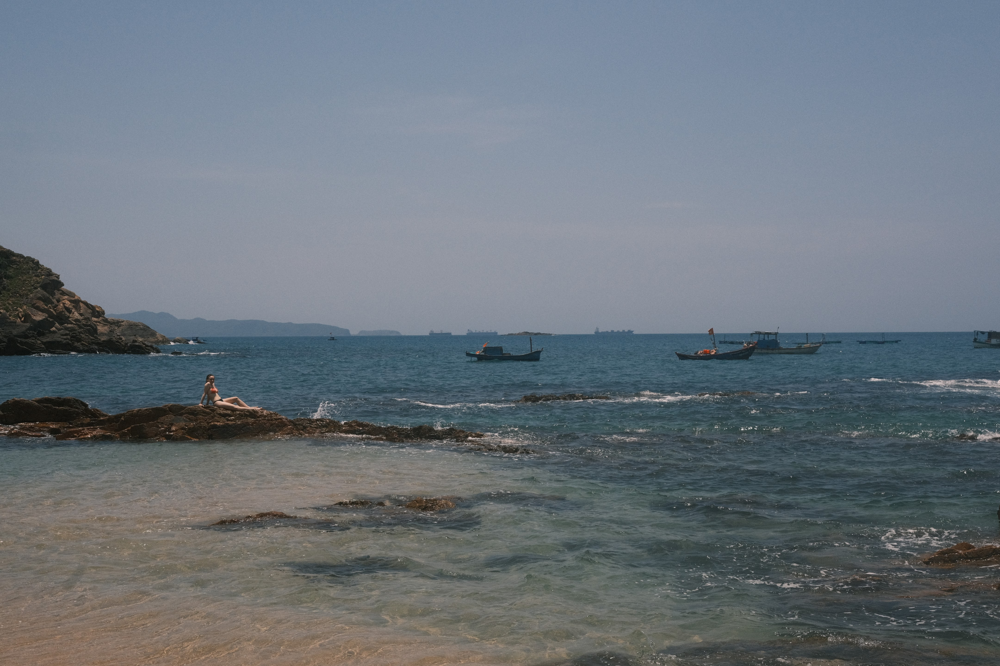
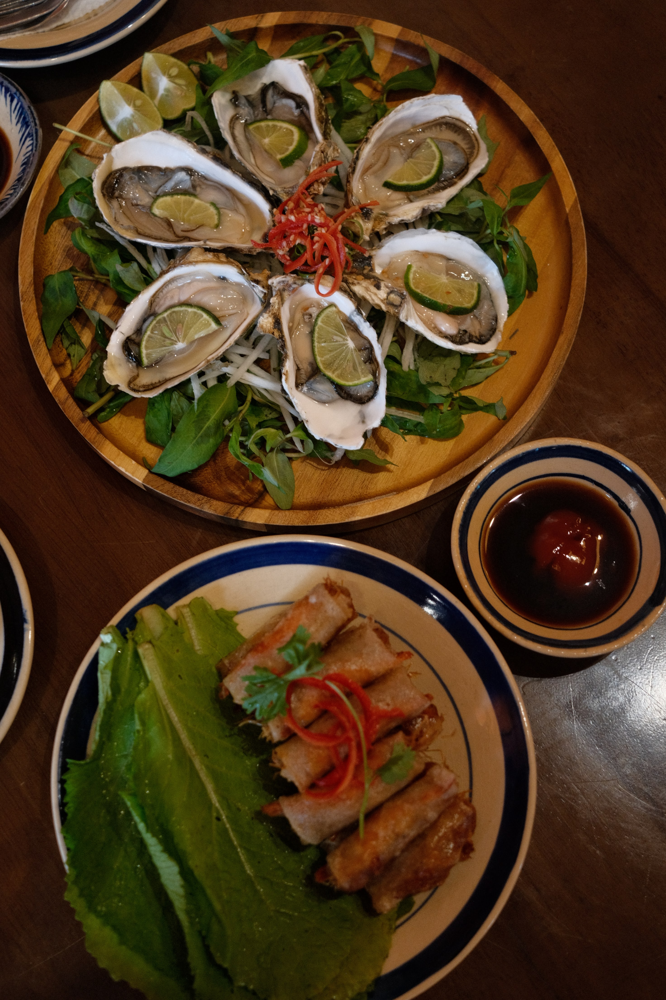


Locals' beach, gym & evening chè Plage des locaux, salle de sport & chè du soir Plaja localnicilor, sală de sport & chè de seară
Morning work session at Tree Hugger café — no air conditioning, but cheap and peaceful with solid WiFi. Lunch: bánh xèo seafood at Bánh Xèo Tôm Nhảy Rau Mầm (sizzling Vietnamese crêpe with prawn, bean sprouts, herbs — fold it in lettuce and dip in nuoc cham). Then an hour at PP Gym — 60,000 VND each, full equipment, friendly.
Afternoon at Bãi biển Quy Hòa — a long, clean, tree-lined beach that felt exclusively used by locals. Entry: 5,000 VND + 2,000 VND for the scooter. A world apart from the more frequented spots.
Dinner at MÂM — bún đậu mắm tôm: rice vermicelli, fried tofu, boiled pork, fresh herbs, all dipped in fermented shrimp paste. A polarising dish; the smell puts people off but the flavour rewards commitment. Dessert: chè at Chè Cô Thúy. A note on chè — it's a broad category of Vietnamese sweet dessert soups made with coconut milk, tapioca, fruit, and beans: lighter and more nuanced than it sounds, and served either hot or cold.
Session de travail matinale au Tree Hugger café — pas de climatisation, mais bon marché, calme et bonne connexion. Déjeuner : bánh xèo aux fruits de mer chez Bánh Xèo Tôm Nhảy Rau Mầm (crêpe vietnamienne croustillante aux crevettes, pousses de soja, herbes — on la roule dans une feuille de laitue et on la trempe dans du nuoc cham). Ensuite une heure à la PP Gym — 60 000 VND par personne, équipement complet, ambiance sympa.
Après-midi à Bãi biển Quy Hòa — une longue plage propre bordée d'arbres qui semblait fréquentée uniquement par des locaux. Entrée : 5 000 VND + 2 000 VND pour le scooter. Un tout autre monde comparé aux spots plus fréquentés.
Dîner au MÂM — bún đậu mắm tôm : vermicelles de riz, tofu frit, porc bouilli, herbes fraîches, le tout trempé dans de la pâte de crevettes fermentées. Un plat clivant ; l'odeur rebute beaucoup de gens, mais la saveur récompense les courageux. Dessert : chè chez Chè Cô Thúy. Note sur le chè — c'est une grande famille de desserts sucrés vietnamiens, sortes de soupes au lait de coco avec du tapioca, des fruits et des haricots : plus léger et plus subtil que ça n'y paraît, servi chaud ou froid.
Sesiune de lucru dimineața la Tree Hugger café — fără aer condiționat, dar ieftin, liniștit și cu WiFi bun. Prânz: bánh xèo cu fructe de mare la Bánh Xèo Tôm Nhảy Rau Mầm (clătită vietnameză crocantă cu creveți, muguri de soia și ierburi — se rulează în frunză de salată verde și se înmoaie în nuoc cham). Apoi o oră la PP Gym — 60.000 VND de persoană, echipament complet, atmosferă prietenoasă.
După-amiaza pe Bãi biển Quy Hòa — o plajă lungă, curată, umbrită de copaci, care părea frecventată exclusiv de localnici. Intrare: 5.000 VND + 2.000 VND pentru scooter. O lume aparte față de locurile mai aglomerate.
Cină la MÂM — bún đậu mắm tôm: vermicelli de orez, tofu prăjit, porc fiert, ierburi proaspete, totul înmuiat în pastă de creveți fermentați. Un preparat polarizant; mirosul îi descurajează pe mulți, dar gustul răsplătește curajul. Desert: chè la Chè Cô Thúy. O notă despre chè — este o categorie largă de deserturi vietnameze dulci, feluri de supe cu lapte de cocos, tapioca, fructe și fasole: mai ușoare și mai nuanțate decât sună, servite fie calde, fie reci.


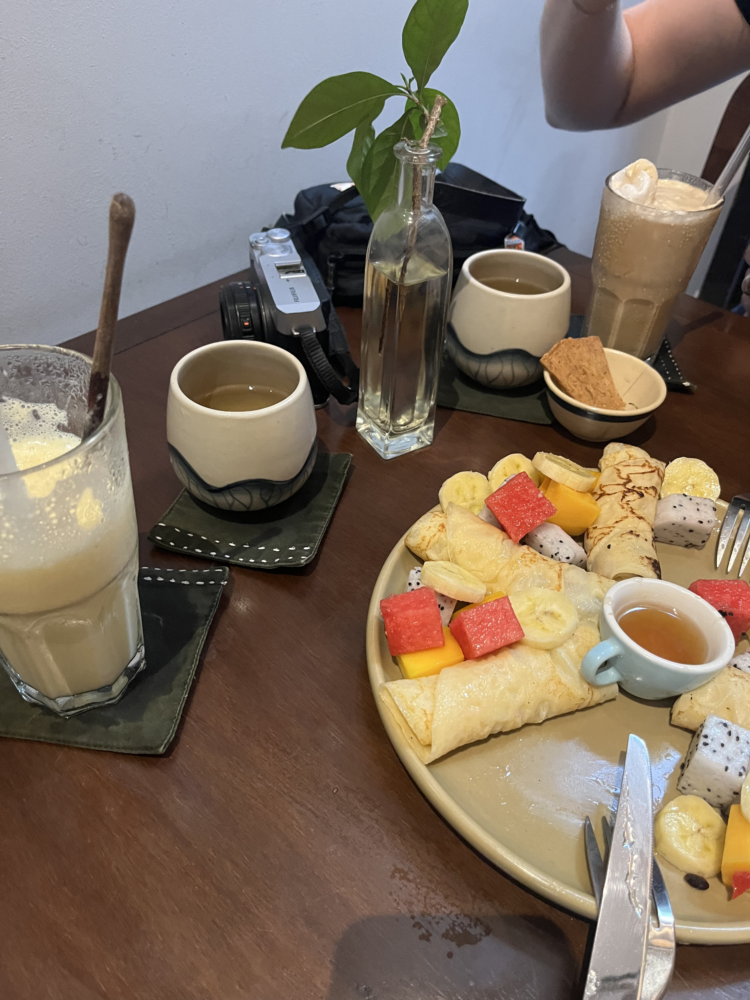


Cham towers, a giant Buddha & seine fishing at dusk Tours Cham, un Bouddha géant & pêche à la senne au crépuscule Turnuri Cham, un Buddha uriaș & pescuit cu năvodul la crepuscul
Forty degrees. We chose intensity over comfort. First stop: Bánh Ít Cham Towers — four towers built by the Champa kingdom in the 11th–12th century, dedicated to Shiva, now inhabited mainly by bats. The surrounding panorama of rice paddies and hills is sweeping; the history, of a civilisation that was gradually absorbed by the Vietnamese expansion southward, is sobering. No crowds, no entrance fees, just a winding lane through the paddy fields to get there.
Two hours of shade and cold drinks at HOSHI COFFEE & TEA, where a local student sat down and spent the time practising his English. Pleasant and unexpected.
Afternoon: Linh Phong / Ông Núi temple, an 18th-century hermit site built around the cave of monk Lê Ban. The 108-metre seated Buddha at the top is said to be the tallest in Southeast Asia. The climb is 600+ steps — manageable but demanding in 40-degree heat. The panorama at the top — lagoon, forest, open sea — is the reward. The narrow lanes leading back to the beach gave us front-row seats to something remarkable: a couple had waded neck-deep into the sea to spread a large seine net in a wide arc. When they pulled it in, it was alive with silver anchovies and small shrimp catching the last light. The simplicity of it was striking.
Dinner in Xuong Ly village at a restaurant that listed no prices. We ate grilled corn, a seafood rice, sun-dried squid (satisfying to chew through), and Ốc đá biển — sea snails with a prized bitter finish the Vietnamese call vị nhẫn. The bill came to 600,000 VND for a dinner that had no business costing that much. In Alexandre's words: racketeered.
Quarante degrés. Nous avons choisi l'intensité plutôt que le confort. Première étape : les Tours Cham de Bánh Ít — quatre tours construites par le royaume Cham aux XIe–XIIe siècles, dédiées à Shiva, désormais habitées principalement par des chauves-souris. Le panorama sur les rizières et les collines alentour est immense ; l'histoire d'une civilisation progressivement absorbée par l'expansion vietnamienne vers le sud est saisissante. Pas de foule, pas d'entrée payante — juste une ruelle sinueuse à travers les rizières pour y accéder.
Deux heures d'ombre et de boissons fraîches au HOSHI COFFEE & TEA, où un étudiant local s'est assis et a passé le temps à pratiquer son anglais. Agréable et inattendu.
Après-midi : le temple Linh Phong / Ông Núi, un site ermite du XVIIIe siècle construit autour de la grotte du moine Lê Ban. Le Bouddha assis de 108 mètres au sommet est réputé être le plus grand d'Asie du Sud-Est. La montée représente plus de 600 marches — faisable mais exigeant avec 40 degrés. Le panorama au sommet — lagune, forêt, mer ouverte — est la récompense. Les ruelles étroites qui redescendent vers la plage nous ont offert un spectacle remarquable : un couple était entré dans la mer jusqu'au cou pour déployer un grand filet en arc de cercle. Quand ils l'ont ramené, il fourmillait d'anchois argentés et de petites crevettes dans la lumière déclinante. D'une simplicité saisissante.
Dîner au village de Xuong Ly dans un restaurant sans prix affichés. Au menu : maïs grillé, riz aux fruits de mer, calmar séché au soleil (agréable à mâcher), et Ốc đá biển — des escargots de mer avec une amertume finale prisée que les Vietnamiens appellent vị nhẫn. L'addition : 600 000 VND pour un repas qui n'avait aucune raison de coûter autant. Selon Alexandre : arnaqués.
Patruzeci de grade. Am ales intensitatea în locul confortului. Prima oprire: Turnurile Cham Bánh Ít — patru turnuri construite de regatul Cham în secolele XI–XII, dedicate lui Shiva, acum locuite mai ales de lilieci. Panorama asupra câmpurilor de orez și dealurilor din jur e copleșitoare; istoria unei civilizații treptat absorbite de expansiunea vietnameză spre sud te pune pe gânduri. Fără aglomerație, fără bilet de intrare — doar un drum îngust prin câmpurile de orez pentru a ajunge acolo.
Două ore de umbră și băuturi reci la HOSHI COFFEE & TEA, unde un student local s-a așezat la masa noastră și a petrecut timpul exersându-și engleza. Plăcut și neașteptat.
După-amiaza: templul Linh Phong / Ông Núi, un sit ermit din secolul al XVIII-lea construit în jurul peșterii călugărului Lê Ban. Buddha în poziție șezândă de 108 metri de la vârf este considerat cel mai înalt din Asia de Sud-Est. Urcușul înseamnă peste 600 de trepte — fezabil, dar solicitant la 40 de grade. Panorama de sus — lagună, pădure, mare deschisă — e răsplata. Aleile înguste care coboară spre plajă ne-au oferit un spectacol remarcabil: un cuplu intrase în mare până la gât ca să desfășoare un năvod mare în arc de cerc. Când l-au tras, era plin de hamsii argintii și creveți mici în lumina amurgului. O simplitate izbitoare.
Cină în satul Xuong Ly, la un restaurant fără prețuri afișate. Am mâncat porumb la grătar, orez cu fructe de mare, calmar uscat la soare (satisfăcător de mestecat) și Ốc đá biển — melci de mare cu o amăreală finală prețuită pe care vietnamezii o numesc vị nhẫn. Nota de plată: 600.000 VND pentru o masă ce n-avea niciun motiv să coste atât. În cuvintele lui Alexandre: jefuiți.


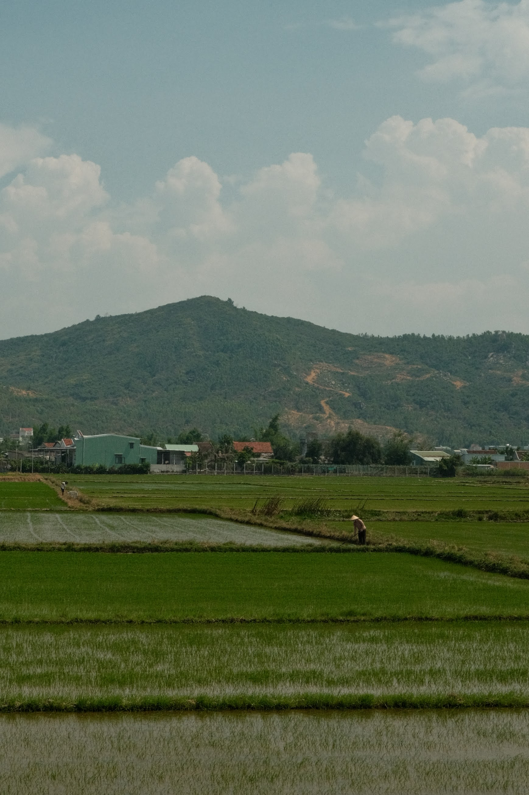


Da Nang & Hội An — coast, craft and a scenic railway Da Nang & Hội An — littoral, artisanat et train panoramique Da Nang & Hội An — coastă, meșteșug și o cale ferată panoramică
Train north to Da Nang Train vers le nord jusqu'à Da Nang Tren spre nord până la Da Nang
A travel day. We left Diêu Trì around 8:30, the train slightly delayed. The North–South line — the Reunification Express — covers 1,726 km end to end (30 to 36 hours for the full run); we rode only a small stretch of it. Lonely Planet regularly crowns it one of the most beautiful train journeys in the world. The train is old but perfectly functional: mostly sleeper berths (the carriage we were in is the 2nd-class equivalent), two seated carriages and one first-class carriage. It was clear from the platform that the train isn't the Vietnamese commuter's transport of choice — most passengers seemed to be either well-off locals or tourists like us.
After two stops we finally reached Da Nang: taxi to the hotel, then an evening walk down to My Khe beach, by way of Mỳ Quảng Cô Sáu (a Michelin Bib Gourmand) — good and cheap, but nothing transcendent; very much in line with the unstarred places we'd visited so far. We walked the length of the beach along Nguyễn Văn Thoại street, then turned up K54 Lê Hữu Trác, where an early-evening market of fruit, fish and shellfish was busy with locals only, well sheltered from mass tourism. We finished the night at the Airbnb, taking refuge from the torrential rain that lasted the whole evening.
Jour de voyage. Nous sommes partis vers 8h30 de Diêu Trì, le train ayant un petit retard. La ligne Nord–Sud — le Reunification Express — couvre 1 726 km d'un bout à l'autre (entre 30 et 36 heures pour le trajet complet) ; nous n'en empruntons qu'un tronçon minime. Le Lonely Planet la sacre régulièrement comme l'un des plus beaux voyages en train du monde. Le train est assez vieux mais très fonctionnel : majoritairement des couchettes (le wagon que nous occupons est l'équivalent d'une 2e classe), deux wagons de places assises et un wagon de première classe. Dès le quai, nous avons compris que le train n'est pas le moyen de transport privilégié des Vietnamiens — la majorité des passagers semblaient appartenir à la classe aisée, suivis de près par des touristes comme nous.
Après deux arrêts, nous arrivions enfin à Da Nang : taxi vers l'hôtel, puis balade en soirée jusqu'à la plage de My Khe, en passant par Mỳ Quảng Cô Sáu (un Bib Gourmand Michelin) — très bon et peu onéreux, mais rien de transcendant ; très dans la norme des enseignes non étoilées visitées jusque-là. Nous avons descendu toute la plage à pied en longeant la rue Nguyễn Văn Thoại, avant de remonter l'artère K54 Lê Hữu Trác : il y avait là, en début de soirée, un grand marché de fruits, poissons et crustacés uniquement fréquenté par des locaux, bien à l'abri du tourisme de masse. Nous avons terminé la soirée à l'Airbnb pour nous réfugier de la pluie torrentielle qui a duré toute la soirée.
Zi de drum. Am plecat pe la 8:30 din Diêu Trì, trenul fiind ușor întârziat. Linia Nord–Sud — Reunification Express — acoperă 1.726 km cap la cap (30–36 de ore pentru traseul complet); noi parcurgem doar o porțiune mică. Lonely Planet o încoronează în mod regulat drept una dintre cele mai frumoase călătorii cu trenul din lume. Trenul e destul de vechi, dar perfect funcțional: majoritar cușete (vagonul nostru e echivalentul clasei a 2-a), două vagoane cu locuri pe scaune și unul de clasa întâi. De pe peron am înțeles că trenul nu e mijlocul de transport preferat al vietnamezilor — majoritatea pasagerilor păreau fie localnici înstăriți, fie turiști ca noi.
După două opriri am ajuns în sfârșit la Da Nang: taxi spre hotel, apoi o plimbare de seară până la plaja My Khe, trecând pe la Mỳ Quảng Cô Sáu (un Bib Gourmand Michelin) — bun și ieftin, dar nimic transcendent; foarte în linia localurilor nestelate de până atunci. Am parcurs toată plaja pe jos de-a lungul străzii Nguyễn Văn Thoại, apoi am urcat pe artera K54 Lê Hữu Trác: era acolo, la început de seară, o piață mare de fructe, pește și fructe de mare, frecventată exclusiv de localnici, bine ferită de turismul de masă. Am încheiat seara la Airbnb, adăpostindu-ne de ploaia torențială care a durat toată seara.
Sơn Trà (Monkey Mountain) & Hàn Market Sơn Trà (la montagne des singes) & le marché Hàn Sơn Trà (muntele maimuțelor) & Piața Hàn
Scooter rented from Thanh Cong Motorbike Rental, then up Monkey Mountain — without seeing many monkeys.
The Sơn Trà peninsula, commonly called Monkey Mountain, is a magnificent spot but one that doesn't improvise: hiking simply isn't a widespread habit in Vietnam, so the infrastructure for walkers (marked trails, pavements, signage) is almost non-existent. Sơn Trà is built for two wheels, not for feet. Regulations are strict for safety reasons — the slopes are steep, and automatic scooters are formally banned from the upper roads; only semi-automatic or manual bikes are allowed. Ranger and police checkpoints sit at the strategic junctions to check your vehicle and turn back anyone who shouldn't be there. We saw a few people walking the tarmac, but it's hard to imagine doing the full loop on foot given the distances and elevation under that heat. And if you do want to walk the few existing trail sections, note that the path isn't a loop: you have to be dropped off by Grab at the start and arrange a separate pickup at the exit, because no taxi cruises these remote zones. All of which makes the famous monkeys hard to spot — they only come down to the road when they need to cross it.
It's not all gripes, though. The mountain's beaches — plastic pollution aside — feel like a pocket of privacy inside a big city. And because travellers turn up with food, the monkeys are drawn down: we got to see some up close. Not the rare endemic red-shanked douc, but rhesus macaques, lured among other things by the coconuts visitors bring. The track down to that beach was in very poor shape — it looks as though the café at the top dumps its waste there, or rainwater runoff drags it down to the shore. Definitely not suited to anyone with reduced mobility. In the end, the mountain offers a beautiful walk through the jungle's biodiversity and a great way to get away from the city's tourist crowds.
Back down, we tried the Hàn Market to see the merchandise for ourselves. The atmosphere is chaotic, the aisles narrow between piles of clothes, and the mood is good: more often than not the vendors are smiling and, despite the language barrier, banter and bargain with humour. The ground floor sells spices, coffee, bulk goods and dried fruit, plus entry-level souvenirs and a few street-food and drinks stands. The first floor is wall-to-wall counterfeits of every big brand, of variable quality. Haggling is the norm here. The vendors talk to one another, so they've aligned on a common floor price. Our purchasing power is far higher than theirs, and that's no secret. It's up to you to decide what feels fair — without forgetting that an informal "tourist tax" is expected and normal. If a negotiation comes down to fifty cents (about 12,000–13,000 VND), those fifty cents won't change your life, but they can buy a meal for the vendor's family. That said, there's no question of being fleeced with outright extortionate prices.
You can also shop the independent boutiques. We tried The Lalin for clothes a notch above the market. Linen and silk dominated, and at first glance the cut and style looked modern and well-made. It was only after trying things on that I realised the finishing and seams are very basic — to the point that the garment doesn't follow the body's lines or drape naturally. That part is subjective and depends on your build, but I wanted to share my honest experience. Prices were higher than the market, but fair for the choice of fabric and quality. We ended the shopping nicely with a kem bơ (avocado ice cream).
Scooter loué chez Thanh Cong Motorbike Rental, puis montée au pic des singes — sans voir beaucoup de singes.
La péninsule de Sơn Trà, plus communément appelée la « montagne des singes », est un endroit magnifique mais qui ne s'improvise pas : au Vietnam, la culture de la randonnée pédestre n'est pas très répandue, et les infrastructures dédiées à la marche (sentiers balisés, trottoirs, signalisation) y sont presque inexistantes. Sơn Trà est pensée pour les deux-roues plutôt que pour les piétons. La réglementation y est très stricte pour des raisons de sécurité — les pentes sont abruptes, et l'accès aux routes supérieures est formellement interdit aux scooters automatiques ; seuls les semi-automatiques ou manuels sont autorisés. Des check-points de garde-forestiers et de police sont positionnés aux points stratégiques pour contrôler votre véhicule et faire faire demi-tour aux contrevenants. Nous avons aperçu quelques personnes marcher le long du bitume, mais il est difficile d'imaginer faire le tour complet à pied tant les distances sont longues et le dénivelé important sous cette chaleur. Et si vous tenez à marcher là où c'est autorisé (sur les rares portions de sentiers existantes), sachez que le chemin ne forme pas une boucle : il faut se faire déposer en Grab au point de départ et planifier un autre véhicule pour le pick-up à la sortie, car aucun taxi ne circule à la volée dans ces zones reculées. Tout cela rend les fameux singes bien difficiles à voir — ils ne sortent sur la route que pour la traverser.
Il n'y a pas que du négatif. Les plages de la montagne, malgré la pollution plastique, nous donnent l'impression d'un coin d'intimité au cœur d'une grande ville. Et comme les voyageurs arrivent avec de la nourriture, les singes y sont attirés : nous avons eu la chance d'en voir de très près. Pas le fameux douc à pattes rousses (l'espèce rare et endémique), mais des macaques rhésus, attirés entre autres par les noix de coco apportées par les visiteurs. Le chemin pour rejoindre cette plage était en très mauvais état — on a l'impression que le café d'en haut y jette ses déchets, ou que le ruissellement des pluies les ramène vers le littoral. Absolument pas adapté aux personnes à mobilité réduite. Au final, la montagne offre une belle promenade au cœur de la biodiversité de la jungle et une super façon de s'éloigner des masses touristiques de la ville.
De retour en bas, nous avons testé le marché Hàn pour voir la marchandise de nos propres yeux. L'ambiance est chaotique, les allées très étroites entre les piles de vêtements, et la bonne humeur règne : le plus souvent, les commerçants ont le sourire et, malgré la barrière de la langue, ils nous abordent avec humour et jouent le jeu de la négociation. Au rez-de-chaussée se vendent épices, café, produits en vrac et fruits séchés, ainsi que des souvenirs d'entrée de gamme et quelques stands de street food et de boissons. Au premier étage, ce sont des contrefaçons de toutes les grandes marques, de qualité variable. Ici, le marchandage fait partie de la norme. Les commerçants se parlent entre eux : ils se sont alignés sur un prix plancher commun. Notre pouvoir d'achat est bien plus élevé que le leur, et ce n'est pas une information cachée. C'est à vous de trancher pour ce que vous considérez comme un prix juste, sans oublier qu'une « taxe touristique » informelle est attendue et normale. Si la négociation se joue à cinquante centimes près (environ 12 000 ou 13 000 VND), ces cinquante centimes ne changeront pas votre vie, alors qu'ils peuvent offrir un repas à la famille du commerçant. Par contre, il n'est pas question de se faire rouler avec des tarifs exorbitants.
Il est aussi possible de faire du shopping dans les boutiques indépendantes. Nous avons tenté The Lalin pour des vêtements d'une qualité supérieure à celle du marché. Le lin et la soie dominaient, et à première vue la coupe et le style avaient l'air modernes et qualitatifs. C'est seulement après essayage que je me suis rendu compte que les finitions et les coutures sont très simples — au point que le vêtement n'épouse pas les lignes du corps ni son tombé naturel. Cette partie est subjective et dépend de la morphologie de chacun, mais je tenais à partager mon expérience. Les prix étaient plus élevés qu'au marché, mais justes pour le choix de la matière et la qualité. Excellente façon de finir le shopping en s'offrant un kem bơ (glace à l'avocat).
Scooter închiriat de la Thanh Cong Motorbike Rental, apoi urcuș pe muntele maimuțelor — fără să vedem prea multe maimuțe.
Peninsula Sơn Trà, numită de obicei „muntele maimuțelor", e un loc magnific, dar care nu se improvizează: în Vietnam, drumeția pe jos nu e o practică răspândită, iar infrastructura pentru pietoni (poteci marcate, trotuare, indicatoare) e aproape inexistentă. Sơn Trà e gândit pentru două roți, nu pentru pietoni. Reglementările sunt foarte stricte din motive de siguranță — pantele sunt abrupte, iar accesul pe drumurile superioare este interzis scooterelor automate; doar cele semi-automate sau manuale sunt permise. Puncte de control ale pădurarilor și poliției sunt amplasate în locurile strategice, ca să verifice vehiculul și să-i întoarcă din drum pe cei care n-au ce căuta acolo. Am văzut câțiva oameni mergând pe asfalt, dar e greu de imaginat să faci ocolul complet pe jos, având în vedere distanțele și diferența de nivel pe căldura aceea. Iar dacă vrei neapărat să mergi pe jos pe puținele porțiuni de potecă permise, reține că drumul nu formează o buclă: trebuie să te lași la start cu un Grab și să-ți planifici un alt vehicul pentru preluare la ieșire, pentru că niciun taxi nu circulă la întâmplare prin aceste zone izolate. Toate astea fac ca faimoasele maimuțe să fie greu de zărit — coboară la drum doar ca să-l traverseze.
Nu e totul negativ. Plajele muntelui, în ciuda poluării cu plastic, ne dau impresia unui colț de intimitate în inima unui oraș mare. Și cum călătorii vin cu mâncare, maimuțele sunt atrase: am avut norocul să vedem câteva de aproape. Nu faimosul douc cu picioare roșcate (specia rară și endemică), ci macaci rhesus, atrași printre altele de nucile de cocos aduse de vizitatori. Drumul spre acea plajă era într-o stare foarte proastă — pare că localul de cafea de sus își aruncă gunoaiele acolo, ori că ploile le duc la vale spre țărm. Absolut nepotrivit pentru persoanele cu mobilitate redusă. Per ansamblu, muntele oferă o plimbare frumoasă prin biodiversitatea junglei și un mod excelent de a te îndepărta de aglomerația turistică a orașului.
Înapoi jos, am încercat Piața Hàn, ca să vedem marfa cu ochii noștri. Atmosfera e haotică, culoarele foarte înguste între teancurile de haine, și domnește buna dispoziție: cel mai adesea, comercianții zâmbesc și, în ciuda barierei lingvistice, ne abordează cu umor și intră în jocul negocierii. La parter se vând condimente, cafea, produse în vrac și fructe uscate, plus suveniruri de bază și câteva tarabe de street food și băuturi. La etajul întâi sunt falsuri ale tuturor marilor branduri, de calitate variabilă. Aici, tocmeala face parte din normă. Comercianții vorbesc între ei: s-au aliniat la un preț minim comun. Puterea noastră de cumpărare e mult mai mare decât a lor, și asta nu e un secret. Rămâne la latitudinea ta să decizi ce ți se pare un preț corect, fără să uiți că o „taxă turistică" informală e așteptată și normală. Dacă negocierea se joacă pe cincizeci de cenți (circa 12.000–13.000 VND), acei cincizeci de cenți nu-ți vor schimba viața, dar pot însemna o masă pentru familia comerciantului. În schimb, nu se pune problema să fii jecmănit cu prețuri exorbitante.
Se poate face cumpărături și în buticurile independente. Am încercat The Lalin pentru haine de o calitate peste cea din piață. Inul și mătasea dominau, iar la prima vedere croiala și stilul păreau moderne și de calitate. Abia după ce am probat mi-am dat seama că finisajele și cusăturile sunt foarte simple — într-atât încât haina nu urmează liniile corpului și nici căderea lui naturală. Partea asta e subiectivă și ține de morfologia fiecăruia, dar țineam să-mi împărtășesc experiența. Prețurile erau mai mari decât în piață, dar corecte pentru alegerea materialului și calitate. Un mod excelent de a încheia cumpărăturile cu un kem bơ (înghețată de avocado).
A work day in Da Nang Une journée de travail à Da Nang O zi de lucru la Da Nang
A quiet work day. Cristina had an interview at 4pm, so we found a café to settle into for the morning, right by our place — another gem tucked away in an alley: NAM House Café, a beautiful two-floor spot serving drinks and pastries for not much (coffees around 50,000 VND on average). No AC, but plenty of fans and wide-open windows, so a constant cross-breeze.
Lunch at Cơm tấm Bà Lang, an excellent address — the pork is perfectly cooked and caramelised, and as so often, very cheap. In the afternoon, while Cri prepared for her interview at the Airbnb, I went to train at the My Khe beach street-workout park. In the evening, to celebrate a successful interview, we went hunting for sushi in Da Nang and settled — a mistake on my part, fearing I wouldn't be full — on an all-you-can-eat. The dinner cost too much for the pleasure it gave, compared with a family-run restaurant: a good dinner for nothing.
Journée chill et travail. Cristina avait un entretien à 16h, nous avons donc repéré un café pour nous poser tranquillement en début de matinée, juste à côté de notre hébergement — une pépite là encore cachée dans une allée : NAM House Café, très beau café sur deux étages qui sert boissons et pâtisseries pour pas trop cher (en moyenne 50 000 VND le café). Pas de clim, mais bon nombre de ventilateurs et bien ouvert, donc plein de courants d'air.
Déjeuner chez Cơm tấm Bà Lang, très bonne adresse — le porc y est parfaitement cuit et caramélisé, et comme bien souvent, très peu onéreux. L'après-midi, pendant que Cri préparait son entretien à l'Airbnb, je suis parti m'entraîner au street-workout de la plage de My Khe. En soirée, pour célébrer un entretien réussi, nous sommes partis en quête de sushi dans Da Nang et notre dévolu s'est jeté — une erreur de ma part qui craignait la non-satiété — sur un sushi à volonté. Le dîner fut trop cher au regard du plaisir pris, comparé à un restaurant tenu par une famille : un bon dîner pour rien.
Zi liniștită de lucru. Cristina avea un interviu la 16:00, așa că am găsit o cafenea în care să ne instalăm dimineața, chiar lângă cazare — încă o bijuterie ascunsă pe o alee: NAM House Café, un local frumos pe două etaje care servește băuturi și patiserie la prețuri bune (cafelele în medie 50.000 VND). Fără aer condiționat, dar cu multe ventilatoare și ferestre larg deschise, deci curent permanent.
Prânz la Cơm tấm Bà Lang, o adresă foarte bună — porcul e perfect gătit și caramelizat și, ca de obicei, foarte ieftin. După-amiaza, în timp ce Cri își pregătea interviul la Airbnb, am plecat să mă antrenez la parcul de street-workout de pe plaja My Khe. Seara, ca să sărbătorim un interviu reușit, am pornit în căutare de sushi prin Da Nang și ne-am oprit — o greșeală a mea, de teamă să nu rămân nesătul — la un sushi la discreție. Cina a costat prea mult față de plăcerea oferită, comparativ cu un restaurant de familie: o cină bună de pomană.
Hội An — old town, leather, Cao Lầu & silver Hội An — vieille ville, cuir, Cao Lầu & argent Hội An — orașul vechi, piele, Cao Lầu & argint
To our surprise, Da Nang had far less to offer than we'd expected. Given the hype around the city, it turns out to be a big digital-nomad hub doubled with a beach resort hugely popular with Indian, Australian and Korean tourists — saturated with trendy cafés and beach clubs. So we often found ourselves back on the scooter heading for Hội An.
We started the day with a quick swim on a beach along the coast between the two cities: Hidden Beach. Most of the coastal strip between Da Nang and Hội An is privatised by high-end hotel complexes run by big international groups like Marriott and Sheraton. The small public stretch that sheltered us had stayed authentic, with local vendors offering loungers and drinks without being pushy.
Hội An, though mostly geared toward commerce — not to say over-consumption — is still very charming. The old town, a UNESCO World Heritage site, stands out for its colonial houses with yellow façades and orange-tiled roofs. It's full of lovely courtyards, a vibrant market and a density of tourists fit to burst.
Wandering the lanes, you can't miss the countless leather and bespoke-shoe workshops. The work is fast and often impressive, but one question keeps coming up: where does the leather come from? Contrary to what you'd think, there's no hidden tannery behind the old town. The sourcing secret comes down to two realities, depending on the boutique's range. For the most affordable cow or buffalo leathers, artisans source directly from the southern provinces of Vietnam (notably toward Ho Chi Minh City); the hides are industrially tanned before arriving in rolls at the Hội An wholesalers. That short circuit is what allows such competitive prices and record turnaround times (sometimes under 24 hours!). For "exotic" textures (crocodile- or snake-style), it's almost always embossed cow leather (pressed with a pattern). If you're after quality, steer clear of suspiciously low prices that often hide faux leather, and ask to feel and choose your own roll of raw material.
For food, the central market (Chợ Hội An) offers very local street-food options. It's the perfect place to try Cao Lầu, the town's signature dish: thick rice noodles with a slightly chewy texture (thanks to the local alkaline water), bathed in a reduced pork broth scented with soy sauce and five-spice, topped with slices of char siu pork and fresh herbs. Hygiene sometimes leaves something to be desired, but others will joke that it adds flavour.
I also took the chance to have a custom silver piece made at Sen Craft Silver, a tiny family business with a stall right on the street. A couple runs it with the woman's brother, who is deaf-mute and handles the forging. Your piece is made to measure in under two hours, entirely by hand before your eyes — a wonderful demonstration of local craft. We also passed the famous Japanese Bridge.
À notre grande surprise, Da Nang avait beaucoup moins à offrir que ce qu'on attendait. Vu le hype qui entoure cette ville, ce n'est finalement qu'un grand hub de digital nomads doublé d'une station balnéaire très prisée des touristes indiens, australiens et coréens — saturée de cafés branchés et de beach clubs. Nous nous sommes donc souvent retrouvés sur notre scooter en route vers Hội An.
Nous avons commencé la journée par une courte baignade sur une plage du littoral entre les deux villes : Hidden Beach. La majorité de la bande côtière entre Da Nang et Hội An est privatisée par des complexes hôteliers haut de gamme, gérés par de grands groupes internationaux comme Marriott et Sheraton. La petite portion de plage publique qui nous a servi de refuge était restée authentique, et des commerçants locaux y offraient leurs services (transats, boissons) sans être insistants.
Hội An, quoique principalement axée sur le commerce — pour ne pas dire la surconsommation —, reste très charmante. La vieille ville, classée au patrimoine mondial de l'UNESCO, se distingue par ses maisons coloniales aux façades jaunes et aux toits de tuiles orangées. Elle regorge de cours intérieures super sympas, d'un marché vibrant et d'une densité touristique à en craquer.
Quand on déambule dans ses ruelles, difficile de passer à côté des innombrables échoppes de maroquinerie et de chaussures sur mesure. Le travail est rapide, souvent impressionnant, mais une question revient souvent : d'où vient le cuir utilisé par les artisans ? Contrairement à ce qu'on peut penser, il n'y a pas de tannerie cachée derrière la vieille ville. Le secret du sourcing tient en deux réalités, selon la gamme de la boutique. Pour les cuirs de vache ou de buffle les plus abordables, les artisans s'approvisionnent directement dans les provinces du sud du Vietnam (notamment vers Ho Chi Minh-Ville) ; les peaux y sont tannées industriellement avant d'arriver en rouleaux chez les grossistes de Hội An. C'est ce circuit court qui permet des prix aussi compétitifs et des délais de fabrication records (parfois moins de 24 h !). Pour les textures « exotiques » (façon crocodile ou serpent), il s'agit presque toujours de cuir de vache embossé (pressé avec un motif). Si vous cherchez de la qualité, fuyez les prix trop bas qui cachent souvent du simili, et demandez à toucher et choisir vous-même votre rouleau de matière première.
Pour manger, le marché central (Chợ Hội An) offre des options de street food très locales. C'est l'endroit parfait pour goûter au Cao Lầu, la spécialité culinaire emblématique de la ville : des nouilles de riz épaisses à la texture un peu caoutchouteuse (grâce à l'eau alcaline locale), qui baignent dans un bouillon de porc réduit parfumé à la sauce soja et aux cinq épices, le tout surmonté de tranches de porc char siu et d'herbes fraîches. La salubrité de l'endroit laisse parfois à désirer, mais d'autres diront avec humour que ça rajoute de la saveur aux plats.
J'ai aussi profité du moment pour me faire faire un bijou en argent sur mesure chez Sen Craft Silver, une toute petite entreprise familiale dont le stand est installé directement dans la rue. C'est un couple qui tient la boutique avec le frère de la dame, sourd-muet, qui s'occupe de la forge. Votre bijou est façonné sur mesure en moins de deux heures, entièrement à la main sous vos yeux — une magnifique démonstration d'artisanat local. Nous sommes aussi passés par le fameux pont japonais.
Spre surprinderea noastră, Da Nang avea mult mai puține de oferit decât ne așteptam. Având în vedere hype-ul din jurul orașului, se dovedește a fi un mare hub de nomazi digitali dublat de o stațiune balneară foarte căutată de turiștii indieni, australieni și coreeni — saturat de cafenele la modă și beach cluburi. Ne-am trezit astfel deseori înapoi pe scooter, în drum spre Hội An.
Am început ziua cu o scurtă baie pe o plajă de pe coasta dintre cele două orașe: Hidden Beach. Cea mai mare parte a fâșiei de coastă dintre Da Nang și Hội An e privatizată de complexuri hoteliere de lux, administrate de mari grupuri internaționale precum Marriott și Sheraton. Mica porțiune de plajă publică ce ne-a servit drept refugiu rămăsese autentică, iar comercianții locali ofereau șezlonguri și băuturi fără să fie insistenți.
Hội An, deși axat în principal pe comerț — ca să nu zicem pe supraconsum —, rămâne foarte fermecător. Orașul vechi, sit UNESCO, se remarcă prin casele coloniale cu fațade galbene și acoperișuri de țiglă portocalie. E plin de curți interioare superbe, de o piață vibrantă și de o densitate turistică gata să plesnească.
Plimbându-te pe ulițe, e greu să ratezi nenumăratele ateliere de marochinărie și de pantofi la comandă. Munca e rapidă, adesea impresionantă, dar o întrebare revine mereu: de unde vine pielea folosită de artizani? Contrar a ceea ce ai crede, nu există o tăbăcărie ascunsă în spatele orașului vechi. Secretul aprovizionării ține de două realități, în funcție de gama buticului. Pentru pieile de vacă sau de bivol cele mai accesibile, artizanii se aprovizionează direct din provinciile din sudul Vietnamului (mai ales spre Ho Chi Minh); pieile sunt tăbăcite industrial înainte să ajungă în suluri la angrosiștii din Hội An. Acest circuit scurt permite prețuri atât de competitive și termene de execuție record (uneori sub 24 de ore!). Pentru texturile „exotice" (gen crocodil sau șarpe), e aproape mereu piele de vacă imprimată (presată cu un model). Dacă vrei calitate, ferește-te de prețurile prea mici care ascund adesea imitație de piele și cere să pipăi și să-ți alegi singur sulul de materie primă.
Pentru mâncare, piața centrală (Chợ Hội An) oferă opțiuni de street food foarte locale. E locul perfect ca să guști Cao Lầu, specialitatea emblematică a orașului: tăiței de orez groși, cu o textură ușor elastică (datorită apei alcaline locale), scăldați într-un bulion de porc redus, parfumat cu sos de soia și cinci condimente, totul acoperit cu felii de porc char siu și ierburi proaspete. Igiena locului lasă uneori de dorit, dar alții vor glumi că asta adaugă savoare preparatelor.
Am profitat și de ocazie ca să-mi fac o bijuterie din argint la comandă la Sen Craft Silver, o mică afacere de familie cu tarabă chiar în stradă. Un cuplu o ține împreună cu fratele femeii, surdo-mut, care se ocupă de forjă. Bijuteria ta e făcută la comandă în mai puțin de două ore, integral manual sub ochii tăi — o demonstrație minunată de meșteșug local. Am trecut și pe la faimosul Pod Japonez.
Spa day & the silk village of Nam Phước Journée spa & le village de soie de Nam Phước Zi de spa & satul mătăsii Nam Phước
A well-anticipated spa day (I'd booked it as a birthday gift for Cri, ahead of her actual birthday). After a leisurely wake-up and a coffee in Da Nang, we had a sticky-rice breakfast (xôi) at the Hội An central market. The spa we chose was La Spa, at the La Siesta hotel — a lovely, deeply restful experience.
Afterwards we rode out to the village of Nam Phước, a famous hand-silk-production village whose output is now much reduced — but we had the incredible luck of visiting a still-working mulberry-silkworm production line. After Cri bought 2.5 m of a silk she chose, the shopkeeper, who spoke no English, handed us her phone with "do you want to see the weaving?" translated on the screen. A quick nod and she led us out. The workshop sat a hundred metres behind the shop: inside, two men, bare-chested and dripping in the heat, welcomed us and walked us through the machines that make up their line and the production process. Our host explained that his father is the 18th generation of weavers in the family, and that they've practised the craft since the 14th century. After a very thorough explanation of each machine, we rode back to Da Nang.
Une journée spa bien anticipée (je l'avais réservée en guise de cadeau d'anniversaire pour Cri, avant sa date de fête). Après un réveil tranquille et un café à Da Nang, petit-déjeuner de riz gluant (xôi) au marché central de Hội An. Le spa choisi était La Spa, dans l'hôtel La Siesta — une belle expérience, bien reposante.
Ensuite, nous sommes partis vers le village de Nam Phước, célèbre village de production de soie à la main dont la production est aujourd'hui bien réduite — mais nous avons eu la chance inouïe de visiter une ligne de production de soie de vers à soie de mûrier encore fonctionnelle, à la main. Après l'achat par Cri de 2,5 m d'une soie de son choix, la vendeuse, qui ne parlait pas anglais, nous tend son téléphone avec « do you want to see the weaving ? » traduit dessus. Après un rapide hochement de tête, elle nous invite à la suivre. L'atelier se tenait une centaine de mètres derrière la boutique : à l'intérieur, deux hommes torse nu, le corps perlant de transpiration à cause de la forte chaleur, nous accueillent et nous expliquent les différentes machines qui composent leur ligne ainsi que le procédé de fabrication. Notre interlocuteur nous explique que son père est la 18e génération de tisserands de sa famille et qu'ils pratiquent ce métier depuis le XIVe siècle. Après une explication très exhaustive de chaque machine, nous repartîmes en scooter vers Da Nang.
O zi de spa bine anticipată (o rezervasem drept cadou de ziua lui Cri, înainte de data sărbătorii). După o trezire tihnită și o cafea la Da Nang, mic dejun cu orez glutinos (xôi) în piața centrală din Hội An. Spa-ul ales a fost La Spa, în hotelul La Siesta — o experiență frumoasă, foarte odihnitoare.
Apoi am plecat spre satul Nam Phước, un faimos sat de producție a mătăsii manuale, a cărui producție e acum mult redusă — dar am avut norocul incredibil să vizităm o linie de producție de mătase de viermi de dud încă funcțională, lucrată manual. După ce Cri a cumpărat 2,5 m dintr-o mătase aleasă de ea, vânzătoarea, care nu vorbea engleză, ne întinde telefonul cu „do you want to see the weaving?" tradus pe ecran. După o scurtă încuviințare din cap, ne invită s-o urmăm. Atelierul se afla la vreo sută de metri în spatele magazinului: înăuntru, doi bărbați cu bustul gol, asudând din cauza căldurii mari, ne întâmpină și ne explică diversele mașini care alcătuiesc linia lor, precum și procesul de fabricație. Gazda ne explică faptul că tatăl său e a 18-a generație de țesători din familie și că practică această meserie din secolul al XIV-lea. După o explicație foarte amănunțită a fiecărei mașini, am pornit înapoi cu scooterul spre Da Nang.
Da Nang beach & a note on double pricing Plage de Da Nang & une note sur la double tarification Plaja Da Nang & o notă despre dublul tarif
A day on Da Nang's beach. A tip for shading from the sun, which that day read a UV index of 8: find the shadow of a palm tree. This "make-do" technique saves you from having to rent a lounger. Don't forget to grab a little bowl of fresh fruit and some water in a thermos to keep it nice and cold.
Just before reaching the beach, we had a pressing craving for eggs at Hoa's Beef Steak and Eggs. Two women treated us to a local street-food speciality: quail eggs marinated in soy sauce, served with small bowls of hot pork or beef broth, alongside crusty bánh mì baguettes reheated right on the coals. Best avoided if you're a hypochondriac or fussy about hygiene.
For work, we spent a lot of time at Nâm House café, a very charming spot with a retro feel, carried by a soundtrack of 1970s Vietnamese pop. We later discovered they run a double-pricing system: one menu for locals and another for foreigners, with prices inflated for tourists by 10–20% on average.
Personally, that doesn't shock me, given our much higher purchasing power. Ethically, we use their resources fleetingly without contributing to the local economy in the long term, which strays from the principles of sustainable tourism — so it feels normal that an informal "tourist tax" applies to us. Alexandre disagrees, though: for him it isn't a fair, transparent commercial practice, and it strips away, in his eyes, the whole sense of welcome and hospitality.
Une journée sur la plage de Da Nang. Astuce pour se protéger du soleil, qui affichait ce jour-là un index UV de 8 : trouvez l'ombre d'un palmier. Cette technique de « système D » vous évite d'avoir à louer un transat. N'oubliez pas de vous prendre un petit bol de fruits frais et de l'eau dans un thermos pour la garder bien fraîche.
Juste avant d'arriver à la plage, nous avions une envie pressante d'œufs au Hoa's Beef Steak and Eggs. Deux dames nous ont régalés d'une spécialité locale de street food : des œufs de caille marinés dans la sauce soja, accompagnés de petites assiettes de bouillon de porc ou de bœuf bien chaud, le tout servi avec des baguettes de bánh mì croustillantes, réchauffées directement sur les braises. À éviter cependant si vous êtes hypocondriaque ou trop regardant niveau hygiène.
Pour travailler, on a passé beaucoup de temps au café Nâm House, un endroit très charmant à l'ambiance rétro, bercé par une bande-son de variété vietnamienne des années 70. Nous avons découvert plus tard qu'ils pratiquent une double tarification : une carte pour les locaux et une autre pour les étrangers, avec des prix gonflés pour les touristes de 10 à 20 % en moyenne.
Personnellement, ça ne me choque pas étant donné notre pouvoir d'achat beaucoup plus élevé. Éthiquement, nous utilisons leurs ressources de façon éphémère sans participer à l'économie locale sur le long terme, ce qui s'éloigne des principes du tourisme durable — c'est donc normal que cette « taxe touristique » informelle nous soit appliquée. D'un autre côté, Alexandre est en désaccord : pour lui, ce n'est pas une pratique commerciale équitable et transparente, et cela enlève, à ses yeux, tout le sens de l'accueil et de l'hospitalité.
O zi pe plaja din Da Nang. Un truc ca să te ferești de soare, care în ziua aceea afișa un index UV de 8: găsește umbra unui palmier. Această tehnică de „descurcăreală" îți economisește închirierea unui șezlong. Nu uita să-ți iei un bol mic de fructe proaspete și apă într-un termos, ca s-o păstrezi bine rece.
Chiar înainte să ajungem la plajă, am avut o poftă presantă de ouă la Hoa's Beef Steak and Eggs. Două doamne ne-au răsfățat cu o specialitate locală de street food: ouă de prepeliță marinate în sos de soia, însoțite de boluri mici de bulion fierbinte de porc sau de vită, totul servit cu baghete crocante de bánh mì, reîncălzite direct pe jar. De evitat însă dacă ești ipohondru sau prea atent la igienă.
Pentru lucru, am petrecut mult timp la cafeneaua Nâm House, un loc foarte fermecător cu o atmosferă retro, legănat de o coloană sonoră de muzică ușoară vietnameză din anii '70. Am descoperit mai târziu că practică un dublu tarif: un meniu pentru localnici și altul pentru străini, cu prețuri umflate pentru turiști cu 10–20% în medie.
Personal, nu mă șochează, dată fiind puterea noastră de cumpărare mult mai mare. Etic, le folosim resursele efemer, fără să participăm la economia locală pe termen lung, ceea ce se îndepărtează de principiile turismului durabil — deci e normal ca această „taxă turistică" informală să ni se aplice. Pe de altă parte, Alexandre nu e de acord: pentru el nu e o practică comercială echitabilă și transparentă, și asta răpește, în ochii lui, tot sensul ospitalității și al primirii.
Huế — the imperial city Huế — la cité impériale Huế — orașul imperial
The scenic train to Huế Le train panoramique vers Huế Trenul panoramic spre Huế
We took the scenic train line, departing Da Nang in the afternoon. This genuinely worthwhile ride lets you watch, from the train, the coastline marking the border between the Thừa Thiên Huế and Da Nang provinces — mostly untouched by tourism, though some sections are being developed. Cat-cuddling at a café next to the station and chicken rice rounded out the day.
Our first real homestay! We found this place on Booking. We were dropped right in front of our hosts, who came to open the gate for us. Behind it hid a beautiful garden, with bonsais and fruit trees scattered around the inner courtyard. A retired couple had converted their large house into lodging for tourists — three or four rooms. Ours was the only one without an en-suite bathroom. At first glance it seemed lovely, but it was only in the morning that we noticed the downsides. Vietnamese people rise with the sun, and here it comes up around five in the morning. So we were woken by uninhibited bodily noises and carrying voices, from what sounded like various deliveries.
Nous avons pris la ligne touristique de train, au départ de Da Nang dans l'après-midi. Ce très beau trajet, qui vaut véritablement le détour, vous laisse contempler depuis le train le littoral délimitant les provinces de Thừa Thiên Huế et de Da Nang — principalement immaculé du tourisme, mais en voie d'aménagement sur certaines sections. Câlins à un chat dans un café à côté de la gare et riz au poulet.
Notre premier vrai homestay ! Nous avons trouvé ce logement sur Booking. On nous a déposés en face de chez nos hôtes, venus nous ouvrir le portail. Derrière celui-ci se cachait un beau jardin, avec des bonsaïs et des arbres fruitiers parsemés un peu partout dans la cour intérieure. Un couple de retraités a aménagé sa grande maison en logement pour touristes — trois ou quatre chambres. La nôtre était la seule sans salle de douche rattachée. À première vue, ce logement nous paraissait sympa, mais c'est seulement le matin que nous nous sommes aperçus des inconvénients. Les Vietnamiens se lèvent avec le soleil, et ici, il se lève vers cinq heures du matin. Nous nous sommes donc fait réveiller par des bruits corporels affranchis et des voix qui portaient, de ce qui semblait être des livraisons diverses.
Am luat linia panoramică de tren, plecând din Da Nang după-amiaza. Acest traseu cu adevărat frumos, care merită ocolul, te lasă să contempli din tren coasta ce delimitează provinciile Thừa Thiên Huế și Da Nang — în mare parte neatinsă de turism, dar în curs de amenajare pe anumite porțiuni. Mângâieri unei pisici la o cafenea lângă gară și orez cu pui.
Primul nostru homestay adevărat! Am găsit cazarea pe Booking. Ne-au lăsat chiar în fața gazdelor, care au venit să ne deschidă poarta. În spatele ei se ascundea o grădină frumoasă, cu bonsai și pomi fructiferi presărați prin curtea interioară. Un cuplu de pensionari și-a transformat casa mare în cazare pentru turiști — trei sau patru camere. A noastră era singura fără baie proprie. La prima vedere părea simpatică, dar abia dimineața am observat neajunsurile. Vietnamezii se trezesc odată cu soarele, iar aici el răsare pe la cinci dimineața. Așa că ne-am trezit din cauza unor zgomote corporale dezinhibate și a unor voci răsunătoare, de la ceea ce păreau a fi diverse livrări.
The Citadel & the tomb of Tự Đức La Citadelle & le tombeau de Tự Đức Citadela & mormântul lui Tự Đức
Huế is charming. You won't need more than two nights to see it. The Imperial City is impressive, especially at night, when the lighting does justice to its beauty. We started the day with two Korean burgers at H'KEP, washed down with two glasses of soy milk. Despite the sun, we set off to explore the citadel.
The Citadel of Huế is the former political and imperial heart of Vietnam under the Nguyễn dynasty (1802–1945). A UNESCO site, this immense Vauban-style fortress holds both the Imperial City and the Forbidden Purple City. Inspired by Beijing's Forbidden City but adapted to Vietnamese traditions, it stands out for its lotus-filled moats, its carved-wood pavilions, its sacred temples and its monumental gates, like the famous Meridian Gate (Ngọ Môn). Despite heavy war damage, its restored palaces and gardens still convey the grandeur of Vietnamese royal architecture. We chose the 530,000 VND ticket per person, which includes three tombs plus access to the citadel. Our taxi driver told us that May to August are the months for domestic tourists, while from September onward, as temperatures drop, the Westerners arrive. The streets and attractions like the Imperial City were full of tourists renting traditional costumes for photo shoots. Several breaks were in order during the visit — the citadel has only one air-conditioned pavilion, and it's the souvenir shop.
The tomb of Tự Đức is probably the most poetic and harmonious in Huế. Conceived by the emperor himself as a retreat to escape the weight of power, the site perfectly reflects his soul as a poet and romantic. Closer to a great landscaped park than an austere funerary monument, the complex is arranged around a large lake dotted with water lilies, with stilted pavilions where he came to write verse, and courtyards shaded by a pine forest. After a good nap at the homestay and renting a scooter from our hosts, it's the perfect place to continue the day after the citadel. The site invites you to wander, far from the bustle — though the mystery remains whole: to prevent the looting of his treasures, Tự Đức was never buried beneath his official stele. The exact location of his true grave is, to this day, an absolute secret.
We then spent the evening strolling the streets of Huế and along the Perfume River. As usual, Saturday nights are on fire: volleyball matches, karaoke, boat outings, empty beer cans on the ground — the city parties!
Huế est charmante. Vous n'aurez pas besoin de plus de deux nuits pour la visiter. La cité impériale est impressionnante, surtout de nuit, quand le jeu de lumières rend justice à sa beauté. Nous avons commencé la journée avec deux burgers coréens au H'KEP, accompagnés de deux verres de lait de soja. Malgré le soleil, nous nous sommes lancés dans la découverte de la citadelle.
La citadelle de Huế est l'ancien cœur politique et impérial du Viêt Nam sous la dynastie Nguyễn (1802-1945). Classée à l'UNESCO, cette immense forteresse à la Vauban abrite à la fois la Cité impériale et la Cité pourpre interdite. Inspirée de la Cité interdite de Pékin mais adaptée aux traditions vietnamiennes, elle se distingue par ses douves fleuries de lotus, ses pavillons en bois sculpté, ses temples sacrés et ses portes monumentales, comme la célèbre porte du Midi (Ngọ Môn). Malgré les lourdes destructions de la guerre, ses palais et jardins restaurés témoignent encore de toute la grandeur de l'architecture royale vietnamienne. Nous avons choisi le billet à 530 000 VND par personne, qui inclut trois tombeaux et l'accès à la citadelle. Notre chauffeur de taxi nous a appris que de mai à août, ce sont les mois pour les touristes nationaux, alors qu'à partir de septembre, avec la baisse des températures, arrivent aussi les Occidentaux. Les rues et les attractions comme la cité impériale étaient remplies de touristes qui louent des costumes traditionnels pour des séances photo. Plusieurs pauses s'imposent durant la visite — la citadelle n'a qu'un pavillon climatisé, et c'est celui de la vente des souvenirs.
Le tombeau de Tự Đức est sans doute le plus poétique et le plus harmonieux de Huế. Conçu par l'empereur lui-même comme un domaine de villégiature pour fuir les lourdeurs du pouvoir, ce site reflète parfaitement son âme de poète et de romantique. Plus proche du grand parc paysager que du monument funéraire austère, le complexe s'organise autour d'un grand lac parsemé de nénuphars, de pavillons sur pilotis où il venait écrire des vers, et de cours ombragées par une forêt de pins. Après une bonne sieste au homestay et la location d'un scooter à nos hôtes, c'est l'endroit parfait pour continuer la journée après la citadelle. Le site invite à la flânerie, loin du tumulte, même si le mystère reste entier : pour éviter le pillage de ses richesses, Tự Đức n'a jamais été enterré sous sa stèle officielle. Le lieu exact de sa véritable sépulture est, aujourd'hui encore, un secret absolu.
Nous avons ensuite passé la soirée à flâner dans les rues de Huế et à nous balader le long de la rivière aux Parfums. Comme d'habitude, les samedis soirs c'est enflammé : match de volley-ball, karaoké, sorties en bateau, canettes de bière vides au sol — la ville fait la fête !
Huế e fermecător. N-ai nevoie de mai mult de două nopți ca să-l vizitezi. Orașul imperial e impresionant, mai ales noaptea, când jocul de lumini îi face dreptate frumuseții. Am început ziua cu doi burgeri coreeni la H'KEP, însoțiți de două pahare de lapte de soia. În ciuda soarelui, ne-am avântat în descoperirea citadelei.
Citadela din Huế este vechiul nucleu politic și imperial al Vietnamului sub dinastia Nguyễn (1802–1945). Sit UNESCO, această imensă fortăreață în stil Vauban adăpostește atât Orașul Imperial, cât și Orașul Purpuriu Interzis. Inspirată din Orașul Interzis din Beijing, dar adaptată tradițiilor vietnameze, se remarcă prin șanțurile pline de lotuși, pavilioanele din lemn sculptat, templele sacre și porțile monumentale, precum faimoasa Poartă a Amiezii (Ngọ Môn). În ciuda distrugerilor grele din timpul războiului, palatele și grădinile restaurate transmit încă toată grandoarea arhitecturii regale vietnameze. Am ales biletul de 530.000 VND de persoană, care include trei morminte plus accesul la citadelă. Șoferul nostru de taxi ne-a spus că lunile mai–august sunt pentru turiștii naționali, în timp ce din septembrie, odată cu scăderea temperaturilor, sosesc și occidentalii. Străzile și atracțiile precum orașul imperial erau pline de turiști care închiriau costume tradiționale pentru ședințe foto. Mai multe pauze s-au impus pe parcursul vizitei — citadela are un singur pavilion climatizat, și acela e magazinul de suveniruri.
Mormântul lui Tự Đức e probabil cel mai poetic și armonios din Huế. Conceput de însuși împăratul ca un domeniu de retragere pentru a scăpa de povara puterii, situl reflectă perfect sufletul său de poet și romantic. Mai aproape de un mare parc peisagistic decât de un monument funerar auster, complexul e organizat în jurul unui lac mare presărat cu nuferi, cu pavilioane pe piloni unde venea să scrie versuri, și curți umbrite de o pădure de pini. După un pui de somn bun la homestay și închirierea unui scooter de la gazde, e locul perfect ca să continui ziua după citadelă. Situl invită la hoinăreală, departe de tumult — deși misterul rămâne întreg: pentru a împiedica jefuirea comorilor sale, Tự Đức n-a fost niciodată îngropat sub stela sa oficială. Locul exact al adevăratului său mormânt este, până astăzi, un secret absolut.
Am petrecut apoi seara hoinărind pe străzile din Huế și plimbându-ne de-a lungul Râului Parfumurilor. Ca de obicei, serile de sâmbătă sunt în floare: meciuri de volei, karaoke, ieșiri cu barca, doze de bere goale pe jos — orașul petrece!
The tomb of Khải Định, then north to Đồng Hới Le tombeau de Khải Định, puis cap au nord vers Đồng Hới Mormântul lui Khải Định, apoi spre nord la Đồng Hới
An early Sunday wake-up to visit the tomb of Khải Định — a large, rather dark-toned hillside complex spread over several tiers, built mostly with materials and techniques fairly innovative for the time (reinforced concrete, cement, slate). It follows the same structure as all Vietnamese mausoleums: first the courtyard of honour, then several stages — a representation of the emperor's close guard (the belief being that his inner circle follows him into the afterlife), a great stele engraved with text (written by another about the deceased, with the exception of Emperor Tự Đức, who had no children and wrote his own autobiography).
A very strict, standardised imperial protocol governs the layout. The alignment you see in the Courtyard of Honour (called Sân Chầu or Bái Đình) obeys rules of geomancy and court protocol unchanged for centuries. Almost all the great imperial tombs of Huế (like those of Minh Mạng or Tự Đức) have exactly the same configuration: two symmetrical rows facing each other — civil mandarins (recognisable by their round hats and long audience robes), military mandarins and soldiers (carrying weapons or helmets), and animals: horses and elephants, the mounts of the court. These statues don't represent real courtiers who existed; they're figures meant to form a guard of honour to serve the emperor's spirit in the afterlife. Then the mausoleum of Emperor Minh Mạng, before heading north to Đồng Hới.
Réveil matinal ce dimanche pour visiter le tombeau de Khải Định — grand espace à flanc de colline, aux couleurs assez sombres, décomposé en plusieurs étages, construit principalement avec des matériaux et des techniques assez innovants pour l'époque (béton armé, ciment, ardoise). Même structure que l'ensemble des mausolées vietnamiens : d'abord la cour d'honneur, puis plusieurs étapes — une représentation de la garde rapprochée de l'empereur (la croyance est que son cercle proche le suit dans l'au-delà), une grande stèle gravée de texte (rédigée par un autre sur le défunt, à l'exception de l'empereur Tự Đức qui, n'ayant pas d'enfant, écrivit sa propre autobiographie).
Un protocole impérial très strict et standardisé régit l'agencement. L'alignement que vous voyez dans la cour d'honneur (appelée Sân Chầu ou Bái Đình) obéit à des règles de géomancie et de protocole de cour inchangées depuis des siècles. Presque tous les grands tombeaux impériaux de Huế (comme ceux de Minh Mạng ou de Tự Đức) ont exactement la même configuration : deux rangées symétriques face à face — des mandarins civils (reconnaissables à leurs chapeaux ronds et leurs longues robes d'audience), des mandarins militaires et des soldats (portant armes ou casques), et des animaux : des chevaux et des éléphants, qui constituaient les montures de la cour. Ces statues ne représentent pas de vrais courtisans ayant existé ; ce sont des figures destinées à former une garde d'honneur pour servir l'esprit de l'empereur dans l'au-delà. Puis le mausolée de l'empereur Minh Mạng, avant de mettre le cap au nord vers Đồng Hới.
Trezire matinală în această duminică pentru a vizita mormântul lui Khải Định — un spațiu mare pe coasta dealului, în tonuri destul de întunecate, împărțit pe mai multe niveluri, construit în principal cu materiale și tehnici destul de inovatoare pentru epocă (beton armat, ciment, ardezie). Aceeași structură ca toate mausoleele vietnameze: mai întâi curtea de onoare, apoi mai multe etape — o reprezentare a gărzii apropiate a împăratului (credința fiind că cercul său apropiat îl urmează în lumea de dincolo), o stelă mare gravată cu text (scrisă de altcineva despre defunct, cu excepția împăratului Tự Đức care, neavând copii, și-a scris propria autobiografie).
Un protocol imperial foarte strict și standardizat guvernează amenajarea. Alinierea pe care o vezi în curtea de onoare (numită Sân Chầu sau Bái Đình) respectă reguli de geomanție și de protocol de curte neschimbate de secole. Aproape toate marile morminte imperiale din Huế (precum cele ale lui Minh Mạng sau Tự Đức) au exact aceeași configurație: două rânduri simetrice față în față — mandarini civili (recognoscibili după pălăriile rotunde și robele lungi de audiență), mandarini militari și soldați (purtând arme sau coifuri) și animale: cai și elefanți, caii de călărie ai curții. Aceste statui nu reprezintă curteni reali care au existat; sunt figuri menite să formeze o gardă de onoare pentru a sluji spiritul împăratului în lumea de dincolo. Apoi mausoleul împăratului Minh Mạng, înainte să pornim spre nord la Đồng Hới.
Đồng Hới & Phong Nha — caves and rest Đồng Hới & Phong Nha — grottes et repos Đồng Hới & Phong Nha — peșteri și odihnă
A rest day in Đồng Hới Une journée de repos à Đồng Hới O zi de odihnă la Đồng Hới
Second day in Đồng Hới — or really our first full one. We try to wake up with the Vietnamese, that is, at five in the morning, but it's far harder than it sounds. We're tired. It feels as though the fatigue of travelling is starting to pile up, and we realise how important it is to plan rest days.
The sun is heavy; it's hard to be outside between nine and two. That cuts a good chunk out of the day for sightseeing. So we decided to swim in the sea in the morning, then take refuge in a TreeHugger café — and yes, it turns out it's a café chain.
Deuxième journée à Đồng Hới — ou plutôt première journée pleine. Nous essayons de nous réveiller avec les Vietnamiens, c'est-à-dire à cinq heures du matin, mais c'est bien plus difficile qu'on ne le pense. Nous sommes fatigués. On dirait que la fatigue du voyage commence à s'accumuler, et on se rend compte qu'il est important de prévoir des journées de repos.
Le soleil est lourd, c'est difficile d'être dehors entre neuf et quatorze heures. Ce qui nous enlève une bonne partie de la journée pour faire du tourisme. Nous avons donc décidé de nous baigner dans la mer le matin, puis de nous réfugier dans un TreeHugger café — et oui, il s'avère que c'est une chaîne de cafés.
A doua zi la Đồng Hới — sau, de fapt, prima zi întreagă. Încercăm să ne trezim odată cu vietnamezii, adică la cinci dimineața, dar e mult mai greu decât pare. Suntem obosiți. Parcă oboseala drumului începe să se adune, și ne dăm seama cât de important e să planificăm zile de odihnă.
Soarele e apăsător, e greu să stai afară între nouă și două. Asta ne ia o bună parte din zi pentru turism. Așa că am decis să ne scăldăm în mare dimineața, apoi să ne refugiem într-un TreeHugger café — și da, se dovedește că e un lanț de cafenele.
Phong Nha cave & Mooc Spring Grotte de Phong Nha & Mooc Spring Peștera Phong Nha & Mooc Spring
A motorboat cave tour at Phong Nha Cave. After hunting at length for the entrance (the Google Maps pin we'd used got us close to the cave by road, but not to the boats' meeting point), we made for the ticket office and the official tour entrance. The organisation is a bit chaotic — they offer two tour formats and propose sharing the cost of a boat (which is a fixed price) between visitors. After long minutes of waiting, Cristina, backed by a French couple, decided to push our luck to speed up our departure from the dock. And off we went: after about ten minutes, the cave mouth finally opened its arms, and for long minutes we pushed deep inside aboard the boat. We didn't get many explanations — we simply took in the sheer size of the cave and the stalactites and stalagmites formed over several million years.
We then took refuge, in turn, at Thang Nhung — Spit Roast Pork & Noodle Shop for lunch, then at Kiwi café & bookstore for a digestive coffee through the heat peak (which turns the towns into lifeless wastelands). Then we got back on the scooter and rode through beautiful Vietnamese countryside roads toward Mooc Spring, a kind of Vietnamese leisure base. What to say about this experience… passive, utterly idle staff, dangerous facilities and an exorbitant price for what it is. We still made the most of the moment to cool off in lovely clear, fresh mountain water, where we were joined by various groups of Westerners.
Tour de grotte en bateau à moteur à la grotte de Phong Nha. Après avoir longuement cherché l'entrée (l'adresse Google Maps renseignée nous approchait au plus près de la grotte par la route, mais pas du point de rendez-vous des bateaux), nous nous dirigeons vers le ticket office et l'entrée officielle du tour en bateau. L'organisation est un peu catastrophique — ils proposent deux formules de tours et de partager entre visiteurs le prix d'un bateau (à coût fixe). Après de longues minutes d'attente, Cristina, avec l'appui d'un couple français, a décidé de pousser notre chance pour presser notre départ de la base nautique. Et nous voilà partis : après une dizaine de minutes, l'entrée de la grotte nous tend enfin ses bras, et pendant de longues minutes on s'enfonce dedans à bord du bateau. Nous n'avons pas eu beaucoup d'explications — nous nous sommes juste contentés de contempler la grande taille de la grotte et les stalactites et stalagmites formées au cours de plusieurs millions d'années.
Nous nous sommes ensuite alternativement réfugiés chez Thang Nhung — Spit Roast Pork & Noodle Shop pour déjeuner, puis chez Kiwi café & bookstore pour un café de digestion, le temps du pic de chaleur de la journée (qui transforme les villes en wasteland dénué de toute vie). Nous avons ensuite enfourché notre scooter à travers de belles routes de campagne vietnamiennes pour nous diriger vers Mooc Spring, une sorte de base de loisirs vietnamienne. Que dire de cette expérience… staff passif complètement zélé et oisif, installations DANGEREUSES et prix exorbitant pour ce que c'est. Nous avons tout de même bien profité du moment pour nous rafraîchir dans une belle eau bien claire et fraîche de montagne, où nous fûmes rejoints par différents groupes d'Occidentaux.
Un tur de peșteră cu barca cu motor la peștera Phong Nha. După ce am căutat îndelung intrarea (pinul de pe Google Maps ne apropia cel mai mult de peșteră pe șosea, dar nu de punctul de întâlnire al bărcilor), ne îndreptăm spre ticket office și intrarea oficială a turului cu barca. Organizarea e cam haotică — oferă două formule de tur și propun împărțirea între vizitatori a prețului unei bărci (cu cost fix). După lungi minute de așteptare, Cristina, sprijinită de un cuplu de francezi, a decis să ne încercăm norocul ca să grăbim plecarea de la baza nautică. Și iată-ne plecați: după vreo zece minute, gura peșterii ne deschide în sfârșit brațele, și timp de lungi minute înaintăm adânc în ea, la bordul bărcii. N-am primit prea multe explicații — ne-am mulțumit să contemplăm dimensiunea uriașă a peșterii și stalactitele și stalagmitele formate de-a lungul a milioane de ani.
Ne-am refugiat apoi, pe rând, la Thang Nhung — Spit Roast Pork & Noodle Shop pentru prânz, apoi la Kiwi café & bookstore pentru o cafea de digestie, pe durata vârfului de căldură al zilei (care transformă orașele în pustietăți lipsite de viață). Apoi am încălecat scooterul pe drumuri frumoase de țară vietnameze, spre Mooc Spring, un fel de bază de agrement vietnameză. Ce să spunem despre experiența asta… personal pasiv și complet trândav, instalații PERICULOASE și un preț exorbitant pentru ce e. Am profitat totuși din plin de moment ca să ne răcorim într-o apă de munte frumoasă, limpede și rece, unde ni s-au alăturat diverse grupuri de occidentali.
Ninh Bình — among the karsts Ninh Bình — au milieu des karsts Ninh Bình — printre formațiunile carstice
The chaotic dawn train to Ninh Bình Le train chaotique de l'aube vers Ninh Bình Trenul haotic de zori spre Ninh Bình
At 4:30 we caught our first real sunrise. The train to Ninh Bình passed through Đồng Hới station at 5:20. It was, let's say, an unforgettable experience. It reminded us a little of France's regional trains (TER) — the kind where seats aren't assigned and you have to fight for one, with no air conditioning. But our train added an extra layer to the chaos: cigarettes smoked between carriages! All of that scared us at first, but once settled it wasn't so bad. Later in the trip, around the sixth hour, we were grateful we'd chosen this train despite the very early start, since it's thanks to the cool of the morning that we didn't arrive completely melted. There was plenty of food on offer: piping-hot pho, bánh mì baguettes and all sorts of Vietnamese sweets.
We reached Ninh Bình around 2pm, and the town greeted us empty, its residents taking their nap. We'd held out the whole way for our young intermittent faster, so the first bench we sat on belonged to a restaurant serving the most Westernised bánh mì in Vietnam. We later discovered this town is full of restaurateurs offering pizzas, burgers and hot dogs.
Right next to the restaurant was a scooter rental. Alexandre didn't even need to negotiate: we were offered the standard rate straight away, 100,000 VND a day. That's where we put the true Vietnamese art to work: the almost supernatural ability to pile an absurd amount of weight onto a tiny 125cc scooter. Us, our travel bags, and probably still room for two crates of mangoes. And off we went for a twenty-minute ride to the homestay!
That long journey had earned us a little nap. This homestay sat among the karsts, surrounded by lakes, with silence reigning — so you can imagine how well-rested we came out of it. The evening outing brought a little night market with regional specialities: pillow cake, chè dessert, frozen yoghurt and taro ice cream. Bring on the sugar! I bought myself a lovely skirt and a white shirt in a Vietnamese boutique, Khanh Linh, on the way back.
À 4h30, nous assistons à notre premier vrai lever du soleil. Le train vers Ninh Bình passait par la gare de Đồng Hới à 5h20. Ce fut, disons-le, une expérience inoubliable. Ça nous a un peu rappelé les trains entre régions (TER) de France, ceux où les places ne sont pas assignées et qu'il faut se battre pour avoir une place assise, sans oublier le manque de climatisation. Mais le train qu'on a pris ajoutait une couche supplémentaire à tout ce chaos : la cigarette fumée entre les wagons ! Tout cela nous a effrayés, mais une fois installés, ce n'était pas si mal. Plus tard dans le trajet, vers la sixième heure, nous nous sommes remerciés d'avoir choisi ce train malgré l'heure très matinale, puisque c'est grâce à la fraîcheur du matin que nous ne sommes pas arrivés complètement fondus. Il y avait pas mal de bouffe qui se servait : du pho bien chaud, des baguettes de bánh mì et toutes sortes de sucreries vietnamiennes.
Nous sommes arrivés à Ninh Bình vers 14 heures, et la ville nous accueillait vide, ses habitants en train de faire la sieste. Nous avons résisté tout le trajet pour notre jeune intermittent de la semaine, donc le premier banc sur lequel on a posé nos fesses était celui d'un resto qui servait les bánh mì les plus occidentalisés du Vietnam. On a découvert plus tard que cette ville était pleine de restaurateurs qui proposaient des pizzas, burgers et hot dogs.
Juste à côté du resto se trouvait un loueur de scooters. Alexandre n'a même pas eu besoin de négocier : on nous proposait directement le tarif standard, 100 000 VND la journée. C'est là que nous avons mis à l'œuvre le véritable art vietnamien : la capacité presque surnaturelle de faire tenir une quantité absurde de poids sur un minuscule scooter de 125 cm³. Nous, nos sacs de voyage, et probablement encore de la place pour deux cageots de mangues. Et nous voilà partis pour vingt minutes de route jusqu'au homestay !
Ce long voyage nous avait mérité une petite sieste. Cet homestay était au milieu des karsts, des lacs nous entouraient et le calme régnait — vous pouvez donc imaginer à quel point on en est sortis bien reposés. La sortie du soir nous réservait un petit marché de nuit, avec les spécialités de la région : gâteau oreiller, dessert chè, yaourt glacé et glace au taro. Vivement le sucre ! Je me suis acheté une belle jupe et une chemise blanche dans une boutique vietnamienne, Khanh Linh, sur le chemin du retour.
La 4:30 prindem primul nostru răsărit de soare adevărat. Trenul spre Ninh Bình trecea prin gara Đồng Hới la 5:20. A fost, să zicem, o experiență de neuitat. Ne-a amintit puțin de trenurile regionale (TER) din Franța, alea unde locurile nu sunt rezervate și trebuie să te lupți pentru un loc, fără aer condiționat. Dar trenul nostru adăuga un strat în plus la tot haosul: țigara fumată între vagoane! Toate astea ne-au speriat, dar odată instalați nu era chiar așa rău. Mai târziu în călătorie, pe la a șasea oră, ne-am felicitat că am ales acest tren în ciuda orei foarte matinale, fiindcă datorită răcorii dimineții n-am ajuns complet topiți. Era multă mâncare de servit: pho bine fierbinte, baghete de bánh mì și tot felul de dulciuri vietnameze.
Am ajuns la Ninh Bình pe la ora 14, iar orașul ne întâmpina pustiu, locuitorii fiind la siestă. Am rezistat tot drumul pentru tânărul nostru intermitent al săptămânii, așa că prima bancă pe care ne-am așezat aparținea unui restaurant ce servea cele mai occidentalizate bánh mì din Vietnam. Am descoperit mai târziu că orașul e plin de restaurante care oferă pizza, burgeri și hot dog.
Chiar lângă restaurant era un loc de închiriat scootere. Alexandre nici n-a avut nevoie să negocieze: ni s-a propus direct tariful standard, 100.000 VND pe zi. Acolo am pus în practică adevărata artă vietnameză: capacitatea aproape supranaturală de a îngrămădi o cantitate absurdă de greutate pe un minuscul scooter de 125 cmc. Noi, sacii de voiaj, și probabil încă loc pentru două lădițe de mango. Și iată-ne plecați pentru douăzeci de minute de drum până la homestay!
Acel drum lung ne câștigase un mic pui de somn. Acest homestay se afla în mijlocul formațiunilor carstice, înconjurat de lacuri, cu liniștea domnind — vă puteți imagina cât de odihniți am ieșit din el. Ieșirea de seară ne rezerva o mică piață de noapte, cu specialitățile regiunii: prăjitură-pernă, desert chè, iaurt înghețat și înghețată de taro. Vivat zahărul! Mi-am cumpărat o fustă frumoasă și o cămașă albă într-un butic vietnamez, Khanh Linh, pe drumul de întoarcere.
Rowing-boat caves at Tràng An Grottes en barque à rames à Tràng An Peșteri cu barca cu vâsle la Tràng An
We set off in the morning to the Tràng An grottoes tourist office, one of the region's flagship activities. After a quick coffee in Ninh Bình we parked the scooter and picked up two tickets for Route 1 (the operator offers three routes covering different parts of the site; we went for the one reputed to be the longest and most touristic, as Cri had read on a blog the night before). After joining our boat, which we shared with a young Frenchman, we visited several grottoes that cut through the mountains, of varying lengths, with stops in between at temples deep in the jungle and among the karst formations. We saw, among other things, a monkey, a bell and trees.
The afternoon, after a delicious banh mi at Bánh Mì Giòn, was spent at the homestay, reading on the terrace and taking in the beautiful view.
Nous sommes partis en matinée à l'office de tourisme des grottes de Tràng An, l'une des activités touristiques phares de la région. Après un petit café à Ninh Bình, nous parquons notre scooter et récupérons deux tickets pour le Tour 1 (l'organisme propose trois tours permettant de visiter différents endroits du site ; nous avons opté pour la formule réputée la plus longue et la plus touristique, comme Cri l'avait lu sur un blog la veille). Après avoir rejoint notre barque, que nous occupions avec un jeune Français, nous visitons plusieurs grottes qui traversent les montagnes, de longueurs variables, avec entre elles plusieurs arrêts dans des temples au cœur de la jungle et des formations karstiques. Nous avons entre autres vu un singe, une cloche et des arbres.
L'après-midi, après un délicieux banh mi chez Bánh Mì Giòn, fut passé au homestay, à lire sur la terrasse et contempler la belle vue.
Am plecat dimineața la biroul de turism al peșterilor Tràng An, una dintre activitățile turistice de bază ale regiunii. După o cafea în Ninh Bình, parcăm scooterul și luăm două bilete pentru Turul 1 (organizatorul oferă trei tururi care permit vizitarea unor locuri diferite ale sitului; am ales formula reputată drept cea mai lungă și mai turistică, după cum citise Cri pe un blog în ajun). După ce ne-am urcat în barca pe care o împărțeam cu un tânăr francez, vizităm mai multe peșteri care străbat munții, de lungimi variabile, cu opriri între ele la temple în inima junglei și printre formațiunile carstice. Am văzut, printre altele, o maimuță, un clopot și copaci.
După-amiaza, după un banh mi delicios la Bánh Mì Giòn, a fost petrecută la homestay, citind pe terasă și contemplând priveliștea frumoasă.
Leaving Ninh Bình — night bus to Sapa Départ de Ninh Bình — bus de nuit pour Sapa Plecare din Ninh Bình — autobuz de noapte spre Sapa
Last hours among the karsts before leaving Ninh Bình on a night bus headed for Sapa, up in the far northern mountains. The next chapter — the rice terraces and the cool air of the highlands — starts here.
Dernières heures au milieu des karsts avant de quitter Ninh Bình en bus de nuit, direction Sapa, tout là-haut dans les montagnes du Grand Nord. Le prochain chapitre — les rizières en terrasses et la fraîcheur des hauts plateaux — commence ici.
Ultimele ore printre formațiunile carstice înainte de a pleca din Ninh Bình cu un autobuz de noapte spre Sapa, sus în munții din nordul îndepărtat. Următorul capitol — terasele de orez și aerul răcoros al podișurilor — începe aici.
Coming up À venir Urmează
- Sapa — rice terraces, ethnic minority villages and mountain air
- Hanoi — Old Quarter, street food, traffic at peak hour
- Ha Long Bay — boat at dawn through the karst islands
- Sapa — rizières en terrasses, villages des minorités ethniques et air de montagne
- Hanoï — vieux quartier, street food, trafic aux heures de pointe
- Baie d'Ha Long — bateau à l'aube entre les pitons karstiques
- Sapa — terase de orez, sate ale minorităților etnice și aer de munte
- Hanoi — Cartierul Vechi, mâncare stradală, trafic în orele de vârf
- Golful Ha Long — barcă în zori printre insulele carstice